Click anywhere or press Esc to close
M.S. Thesis · California State University, Northridge · 2026
Phase-Based Oscillatory Computation
The proposed Phase-based Oscillatory Computation (PHOSCO) framework provides an initial model for an oscillator-based general-purpose temporal computing system, operating in the continuous value-space. Analog numerical values were encoded as differences in relative oscillation phases between individual concurrently-running analog oscillator pairings, and represented as Time-Difference Variables (TDVs). Oscillator pausing mechanics were used to modify values stored as TDVs within the experimental model, and linear arithmetic operations for copying, inverting, adding and subtracting were made possible by the usage of conditional oscillator pausing actions. A preliminary validation of the proposed PHOSCO framework was carried out via the construction and evaluation of a basic prototype device. The constructed prototype used 6 custom-designed Controllable Oscillator (CO) modules, centered around the classic 555 capacitor-based oscillator, that included supplemental oscillation pausing & frequency-locking mechanics. The CO modules were designed as custom electrical circuits, and implemented via custom printed circuit boards, alongside the TLC555 oscillator module. Analog value storage and the proposed arithmetic operations were subsequently simulated and evaluated within the prototype device using high-speed digital controller systems. Storage longevity and operational precision were comprehensively evaluated by duty-cycle & relative phase difference tracking algorithms, with the resultant data being qualitatively analyzed using graphical visualizations. These evaluations included a discussion of inter-oscillatory dynamics and coupling forces. The implemented frequency-locking mechanics resulted in an operating duty-cycle convergence within ±0.83 μs of all CO modules. The simulated linear arithmetic operations displayed a high degree of precision, producing mathematically correct results within an expected tolerance of ±10% of the operating duty-cycle. The longevity of stored numerical values displayed a moderate amount of drift within a tracking period of 10 seconds. The attained results delivered a promising preliminary validation of the proposed PHOSCO framework, and offered exciting possibilities for further investigative efforts into unconventional temporal models. Future research avenues were suggested and discussed in terms of hypothetical evolutions and developments of the PHOSCO model, including explorations of electrical isolation improvements, noise characterization, power profile analysis and potential implementations of non-linear arithmetic operations.
Research and development of generalized computational models forms the backbone of contemporary computer science research. The promise of a computing framework applicable to a wide variety of computational tasks has sparked countless hours of research, invested in by virtually all tenets of theoretical, experimental, statistical and artistic sciences since the early 20th century (see Chapter 2). However, following the initial match-up between the inaugural discrete-time digital frameworks and their continuous-time analog counterparts in the 1940s and 50s, the orderly, elegant and straightforward operational nature of digital systems has allowed them to surpass virtually all alternatives in the context of wider accessibility and raw computing capabilities. While the vast majority of the computational requirements present in most fields of modern engineering have been almost entirely satisfied with capable and efficient digital systems, an interest in the exploration of unconventional frameworks has remained in various theoretical and practical realms of study. Alongside allowing researchers to indulge in the highly intriguing, captivating and thought-provoking process of investigating unconventional computing and number-processing paradigms, this type of research has occasionally resurfaced throughout history in the scientific community to solve a variety of complex problems. In recent decades, a large portion of these investigative efforts have focused on developing computational models that are capable of outperforming their conventional counterparts in terms of power efficiency. The latest developments in generative artificial intelligence and deep-learning algorithms have revealed an increasingly hungry power demand profile of the existing computing infrastructure. Various unconventional digital and analog computational frameworks have thus been developed or resurfaced as part of the crucial task of reducing humanity's heavy energy footprint (see Section 2.1.2). In conjunction with this research effort, a considerable amount of emphasis has been placed on investigating alternate physical mediums for numerical encoding schemes. One of the most notable and interesting physical mediums analyzed within this research effort is time (see Section 2.2). To some degree, time-based logic is present in a majority of contemporary digital systems that are used extensively on an every-day basis. However, computational frameworks that rely entirely on time-based value-encoding schemes, operating fundamentally in the continuous value-space, have recently been proposed as potential alternatives for a variety of specialized and generalized computational tasks. Such paradigms, commonly referred to as Temporal Computing models, are likely to see a gradual increase in research focus across a variety of potential fields of application in the coming decade. To provide an insight into the viability, technical capabilities and limitations of temporal systems in the context of general-purpose numerical computation, a simple phase-based oscillatory temporal framework is investigated (see Chapter 3), implemented (see chapters 4 & 5) and evaluated (see Chapter 6) in this work.
The core essence of analog computation pertains to its ability to operate in domains of theoretically infinite precision. Such computing systems derive their etymology from the term "analogy", as they are often designed to systematically model the natural world [1]. Since our environment is largely analog in nature, these frameworks were researched and implemented extensively throughout history to perform a diverse range of computational tasks. Contemporary surveys often categorize most computing systems based on the time-domain and value-space in which they can function [2].
| Discrete Time-Domain | Continuous Time-Domain | |
|---|---|---|
| Discrete Value-Space |
– Conventional Digital Systems – Turing Machines – Finite State Machines – Logic Gates – Field-Programmable Gate Arrays |
– Phase-based Digital Simulation (see Section 3.4.1.2) |
| Continuous Value-Space |
– Neural Networks (see Section 3.4.1.1) – Temporal Hardware Accelerators (see Section 3.4.2) – Time-Difference Circuits (see Section 3.4.4) – Field-Programmable Analog Arrays (see Section 2.1.2) |
– Conventional Analog Systems – Differential Analyzers (see Section 2.1.1) – GPAC (see Section 2.1.1) – Operational Amplifiers |
Table 2.1: Computing models categorized by the time-domain and value-space they operate in.
Continuous-time analog computation is the traditional analog computing paradigm. The key characteristic of this model family lies in its ability to operate in the continuous value-space and the continuous time-domain, where computational tasks are carried out simultaneously in a real-time environment with fully analog values and variables [2][1]. This serves as a valuable tool for tasks involving actively-changing inputs and variables, such as solving complex differential equations [3][4][5][6] or carrying out advanced physics simulations [5][7][8]. A significant drawback of continuous-time analog systems is their precision [1][9][10]. Voltage or current are often used to represent fully analog values, and sensitive circuitry is commonly used to perform calculations. Therefore, the precision of these systems is highly dependent on the quality and reliability of their internal electrical components. This has made continuous-time analog computing systems historically difficult to manufacture and mass-produce [1][9]. Most early analog computing models developed in the 1930s and 40s belong to this category, as do the vast majority of all analog computers.
One of the earliest developed analog computers was Vannevar Bush's Differential Analyzer [11], made entirely from mechanical parts, and used for solving second-order differential equations. Similarly, one of the earliest general-purpose analog computer models was conceived by Claude Shannon, as the General-Purpose Analog Computer [12], which in many ways continues to serve as the basis for most continuous-time analog systems today.
| System | Purpose | Operating Principle |
|---|---|---|
| Bush's Differential Analyzer [11] | Solving ordinary second-order differential equations. | Mechanical elements are used to simulate and perform continuous-time computation, with rotating disks & wheels being used to represent actively-changing variables. |
| Shannon's General-Purpose Analog Computer (GPAC) [12] | First model for general-purpose continuous-time computation. | Electrical signals are used to represent analog variables, and voltage-sensitive circuits for real-time arithmetic operations. |
| Rosen and Fossier's Desk-Model Electronic Analog Computer [13] | Compact & portable tool for solving differential equations. | Electrical signals are used to represent analog variables, with operational amplifiers used for performing arithmetic operations and custom programming via a patch-cord interface. |
| Rubel's Extended Analog Computer [14] | Theoretical expansion of GPAC model for general-purpose analog computation. | Theoretical framework that expands on previous models by allowing non-polynomial equations and function discontinuities. |
| anabrid's THE ANALOG THING [15] | Educational tool for studying analog electronics & performing basic analog calculations. | Modern example of an electronic continuous-time analog system, using electrical components such as operational amplifiers to perform computation, and execute programs via patch-chord interfaces. |
Table 2.2: Notable examples of continuous-time analog computing systems.
Discrete-time analog computation is the more obscure analog computing paradigm that has historically seen less development than continuous-time frameworks. The defining characteristic of this model family is the fact that computation in the continuous value-space is carried out in discretized steps [1][2]. This hybrid approach permits the existence of individual operation classes, similar to the operating principle of most digital systems, while maintaining the presence of fully analog values and variables [1]. Such systems are well-suited for non-deterministic computational tasks, including arithmetic operation approximation [16][17][18], audio processing [19][20] and neural network simulation [21][22][23][24]. Some surveys draw a distinction between discrete-time and sequential-time analog computing systems, where a further categorization is made on the presence of a consistent instruction execution frequency [1]. The lack of a strict simultaneous execution scheme, which is otherwise characteristic of their continuous-time counterparts (see Section 2.1.1), suggests that discrete-time analog models introduce an expansion of possible analog value storage & computational methodologies. This potential makes these frameworks exciting candidates for novel general-purpose computing model research.
| System | Purpose | Operating Principle |
|---|---|---|
| Bucket-Brigade Devices [19][20] | Audio processing & creating artificial audio delay effects. | Store analog values as capacitor charges & create arbitrary delay circuits with the stored charges. |
| Switched-Capacitor Systems [16][17][18] | Executing & approximating arithmetic operations with charge-domain processing. | Store analog values as capacitor charges & perform arithmetic operations by manipulating their charging & discharging rates. |
| Sample & Hold Circuits [25][26] | Wide variety of applications, including analog-to-digital converters and short-term analog storage. | Circuits designed specifically for analog state sampling in capacitor-based circuits, usually present stored charges through amplifiers. |
| Field-Programmable Analog Arrays (FPAAs) [27] | Analog counterpart of conventional FPGA systems, commonly used for non-deterministic computation simulation. | Commonly store analog values in floating-gate transistor memory cells, as floating charges between transistor elements [28]. |
Table 2.3: Notable examples of discrete-time analog computing systems.
Any computing framework requires some physical medium to encode the values and variables contained within its computational model. Historically this requirement was often satisfied through voltage [12][29][15] or current [30][31]. Another tangible physical medium that could be used to satisfy this requirement is time. Computing frameworks that operate with time-based value encoding schemes are commonly referred to as Temporal Computing models [32][33][34][35].
There are several key advantages that temporal computing systems maintain over their conventional digital & analog counterparts. One of the primary challenges encountered in modern computational research is the exponential rise in power demand of the existing computing infrastructure. With the recent emergence of generative artificial intelligence, computational power requirements are currently expected to double every three years [34]. Thus, low-power models are urgently sought after in order to reduce the heavy energy footprint of contemporary systems. To this end, temporal frameworks have recently been proposed as low-power alternatives to conventional methodologies [32][36]. Since information is not encoded through individual bits, these systems can theoretically encode large information packets on far fewer physical lines compared to their digital equivalents. This also suggests that temporal systems can hypothetically process the same information density as their digital counterparts with fewer electronic components. Experimental results have previously shown that temporal systems have significantly outperformed digital ones in terms of the minimization of physical footprints [34]. Moreover, while precision and accuracy sacrifices are expected when implementing temporal systems in most practical applications, certain algorithmic and graph-based processing tasks have previously displayed significant computational speed & efficiency advantages when executed with temporal architectures. For example, an experimental implementation of Djikstra's algorithm on a temporal state machine has shown significant promise in terms of energy and throughput [37]. It has also been demonstrated that various dynamic programming algorithms are particularly well-suited to temporal systems [38].
Despite the advantages that temporal computing models maintain over their conventional digital & analog equivalents, several key differences are important to highlight. Reading a value stored in a temporal system requires its respective storage mechanism to display its value to an observing logical entity or user at least once, which inherently requires a passage of time. Therefore any computation taking place within temporal models, by definition, cannot be instantaneous [32][36]. This fact suggests that discrete-time analog frameworks (see Section 2.1.2) are particularly well-suited for implementations of temporal systems, since their overall accuracy should not depend on a simultaneous execution scheme that is characteristic of their continuous-time counterparts (see Section 2.1.1).
| System | Purpose | Operating Principle |
|---|---|---|
| Hybrid Temporal Hardware Accelerators (see Section 3.4.2) |
Accelerate existing digital computing elements. | Interface with digital hardware and perform digital computation with time-based frameworks. Often use delay-based temporal memory cells. |
| Temporal State Machines [37] | Execution of non-deterministic algorithms. | Determine execution paths purely based off of arrival times of digital signals. |
| Time-Difference Circuits (see Section 3.4.4) |
Perform analog temporal value storage and arithmetic. | Store analog values as delays between digital signals with analog storage mediums, manipulate timed delays to achieve arithmetic operations. |
| Oscillator-based Computing Systems (see Section 3.4.1) |
Solve dynamical problems and represent neural networks. | Networks of oscillators are used to perform computation, with natural phenomena, such as oscillator coupling, often used to solve dynamic problems and for simulating digital systems. |
Table 2.4: Notable examples of temporal computing systems.
Encoding a numerical value as an arbitrary passage of time is often referred to as a Time-Difference Variable (TDV) [33]. This abstract data structure can be implemented in various ways. For example, a TDV can be encoded as the elapsed time between the rising edges of two digital signals [33][34].
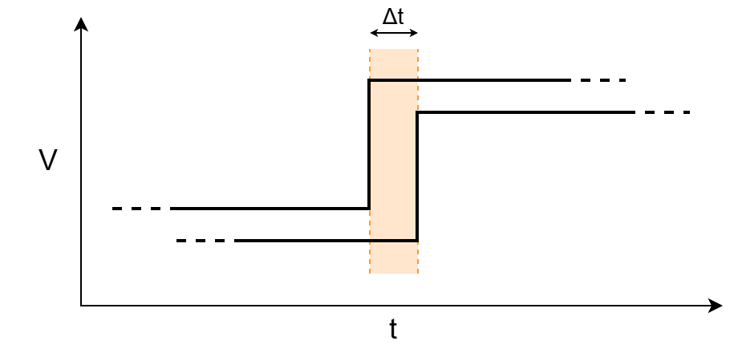
A notable contemporary example of temporal computing systems that use TDVs are hybrid hardware accelerators (see Section 3.4.2). These devices serve to accelerate existing digital systems and usually interface with them via time-to-digital converters [33], which explicitly convert a timed delay to a digital value. Another example of such systems are Time-Difference Circuits (see Section 3.4.4). These devices include time-domain circuitry that operate directly with numerical values encoded as time differences or timed delays. Analog timed latches can store a time delay as some analog medium, and are able to reproduce their stored values as a delay signal. Arithmetic operations are usually performed by introducing timed delays of the involved signals to achieve a relative phase change.
Time-Difference Variables can also be implemented cyclically, where their time difference signals are displayed repeatedly, often at a defined display frequency. The cyclical & repeating nature of these types of TDVs also means their numerical values are inherently limited in representation range by their display frequency, often requiring them to be expressed as a relative phase difference (∆Φ) between cyclical digital signals, such as oscillators.
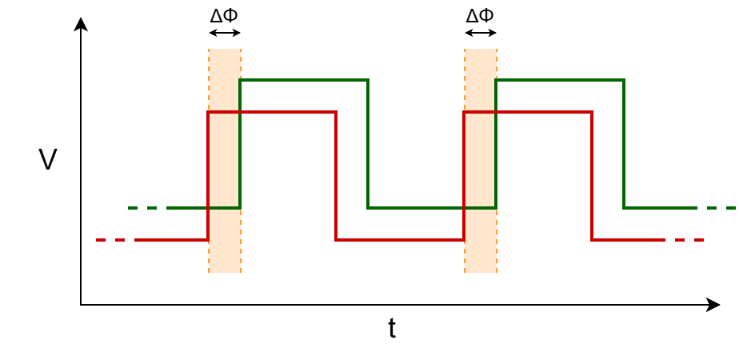
Similar examples of temporal computing systems that use cyclical TDVs are oscillator-based computing systems (see Section 3.4.1). Such frameworks use networks of concurrently running electrical oscillators and phase-based logic to perform computation. They usually rely on physical dynamics, such as oscillator coupling, to directly model the problems they are solving (see Section 3.4.1.1). Individual oscillator modules can also be used to simulate many digital circuits, using locked phase relationships to directly encode digital data (see Section 3.4.1.2). Another similar example of these systems is pulse-train signal processing (see Section 3.4.3). In this data processing framework, function waveforms are represented as a series of repeated electrical signal pulses, and arithmetic is performed by combining, adding or removing individual pulses in an algorithmic sequence.
The combined usage of cyclical TDVs and phase-based logic has seen relatively limited exploration in contemporary computational research. Their capabilities and technical limits, in the context of a theoretical general-purpose discrete-time analog computing system, will be explored in the proposed Phase-based Oscillatory Computation (PHOSCO) framework.
The PHOSCO model encodes an analog numerical value as the relative phase difference (∆Φ) between a pair of concurrently-running linear oscillators. Thus, the basic storage unit of a hypothetical PHOSCO-based system is a pairing of oscillator elements (see Section 3.2). Arithmetic operations are encoded in the relative phase relationships between multiple oscillator pairings. It relies on oscillator pausing mechanics (see Section 3.2.1) to achieve changes in ∆Φ oscillator pairing and perform numerical computation (see Section 3.3). This phase-based encoding scheme permits the proposed PHOSCO framework to effectively store analog numerical values within its computational model and perform basic arithmetic operations with them.
In the proposed PHOSCO model, a volatile TDVs is implemented as a pair of concurrently-running oscillator elements, a "Value" oscillator element and a "Reference" oscillator element (labeled as VAL & REF respectively in subsequent diagrams). These oscillator elements maintain the same operating frequency and duty-cycle duration (tduty), but maintain an independent ∆Φ between their relative oscillation phases. In the proposed PHOSCO framework, the process of storing an analog numerical value into a TDV involves matching its ∆Φ, measured as the elapsed time from the rising edge of REF to the rising edge of VAL, to a proportional duration of time. All stored numerical values are expressed as scalars, defined within a range enclosed by ∆Φ = 0° (in-phase) and ∆Φ = 180° (out-of-phase). A larger ∆Φ between a given TDV's oscillator pairing elements indicates a larger stored numerical value.
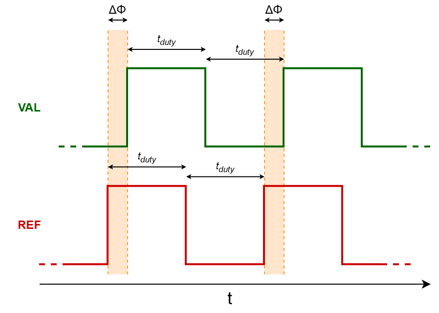
In the proposed PHOSCO framework, the oscillator elements comprising all TDVs operate with analog oscillation states. Thus, each oscillator element is abstractly represented as repeated charging & discharging cycles, with its digital output state toggled upon its oscillation state reaching a maximum or minimum threshold. Each oscillator element can be arbitrarily started, interrupted and stopped in the continuous time-domain, effectively providing an analog value-space.
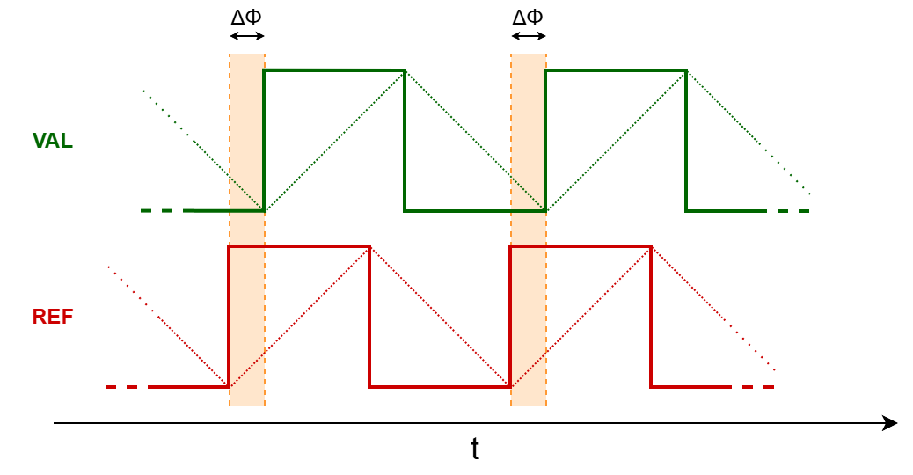
In the proposed PHOSCO framework, modifying the numerical value stored in a TDV is performed by changing its ∆Φ. This is achieved with temporary interruptions of the oscillations of the TDV's oscillator element(s), and is referred to as "pausing".
Interruption of an oscillator's oscillation cycle, while preserving its analog oscillation state.
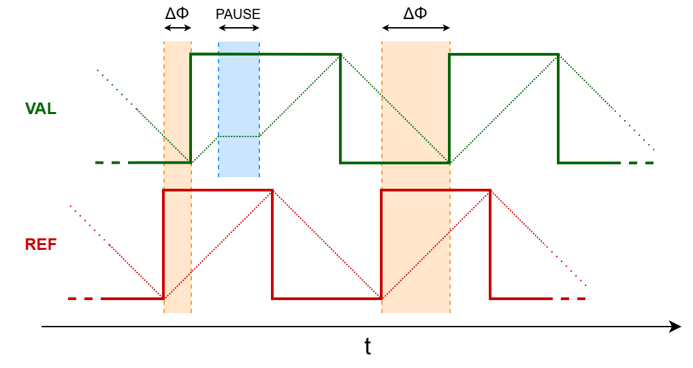
Pausing one oscillator element of a given TDV for a duration of time effectively results in its ∆Φ being shifted, and its stored numerical value being changed (see Figure 3.3). Thus, in the context of the proposed PHOSCO framework, the terms "pause" and "∆Φ shift" are analogous.
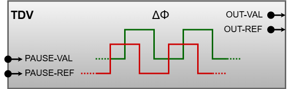
In subsequent abstract TDV visualizations (see Figure 3.4), their VAL & REF oscillator element outputs are represented as OUT-VAL & OUT-REF, and their pausing mechanics are controlled by PAUSE-VAL & PAUSE-REF.
In the proposed PHOSCO framework, arithmetic operations involving TDVs are performed by matching the ∆Φ of a chosen target TDV, referred to as the "Result TDV", to some linear combination of one or more chosen input TDVs, referred to as the "Operand TDVs". This is accomplished through the usage of the oscillator pausing mechanic (see Section 3.2.1) to match the relative oscillating phases the Result TDV's oscillator elements to some linear combination of the Operand TDVs' oscillator element signals. This phase-matching process of the Result TDV is referred to as the "Construction Step" of a TDV operation.
The Result TDV's ∆Φ is matched to some linear combination of the Operand TDVs' ∆Φ, as determined by the operation type.
Furthermore, to ensure the construction step of a given TDV operation matches the Result TDV's ∆Φ to the arithmetically correct value, operations involving multiple Operand TDVs require the relative alignment of their Operand TDVs' ∆Φ to reflect the appropriate linear combination. This relative alignment of the Operand TDVs is referred to as the "Alignment Step" of a TDV operation, and shifts one Operand TDV's ∆Φ, relative to the other Operand TDV's ∆Φ, to produce the correct alignment.
The Operand TDVs' ∆Φ are aligned to reflect the appropriate linear combination of their values, as determined by the operation type.
These phase matching & alignment processes are performed by issuing conditional pausing actions on the Operand & Result TDVs' individual oscillator elements, as determined by a unique network of digital logic gates that continuously monitor their output states (see Figure 3.5). This digital logic gate network is referred to as the "Operation Circuit" (fop), with each TDV operation type containing a unique fop.
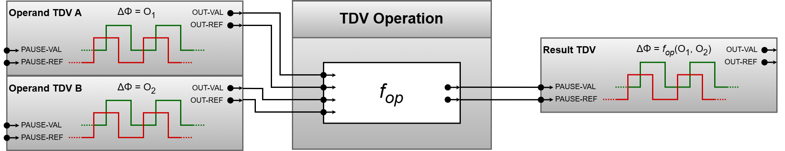
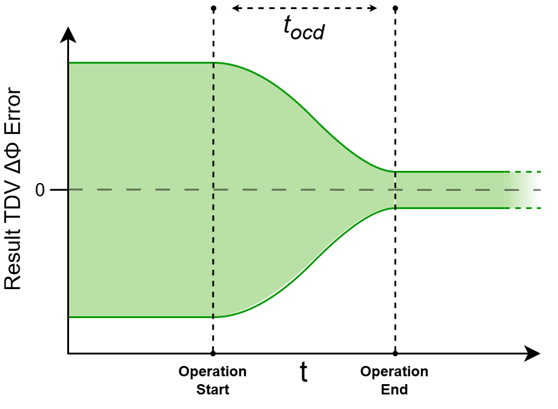
A TDV operation is started upon the connection of its fop to the Operand & Result TDVs oscillator element output signals, and is concluded upon the disconnection of its fop following an arbitrary duration of time. During this period, the Result TDV's ∆Φ value converges to the arithmetically correct result (see Figure 3.6), and is referred to as the "Operation Convergence Duration" (tocd). Thus, each TDV operation requires an inherent passage of time, corresponding to tocd, to assign the arithmetically correct ∆Φ to the Result TDV. An ideal minimum tocd is not explicitly established in the proposed PHOSCO framework.
| Operation | Type | Operand # | Steps |
|---|---|---|---|
| Copy (see Section 3.3.1) |
Linear | 1 | – Construction |
| Inversion (see Section 3.3.2) |
Linear | 1 | – Construction |
| Addition (see Section 3.3.3) |
Linear | 2 | – Alignment – Construction |
| Subtraction (see Section 3.3.4) |
Linear | 2 | – Alignment – Construction |
Table 3.1: Summary of all proposed TDV Operations.
The TDV Copy Operation accepts one Operand TDV and one Result TDV. The Result TDV's ∆Φ is assigned a value corresponding to the Operand TDV's ∆Φ (see Figure 3.8).
Brings the Result TDV's VAL & REF oscillator elements in-phase with the Operand TDV's VAL & REF oscillator elements respectively.
In the context of the proposed PHOSCO framework, this can be achieved by individually pausing the Result TDV's VAL & REF oscillator elements based on the outputs of two XOR logic gates respectively, the first one taking the two VAL oscillator elements of the Operand & Result TDVs as its inputs, and the second one taking the two REF oscillator elements of the Operand & Result TDVs as its inputs. Thus, the TDV Copy operation's fop consists of two XOR digital logic gates (see Figure 3.7).
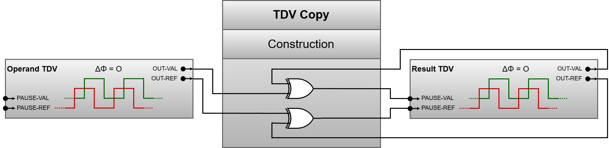
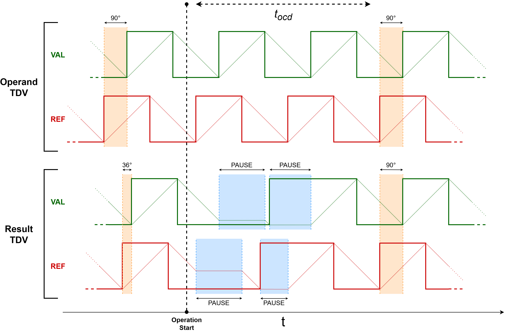
The TDV Inversion Operation accepts one Operand TDV and one Result TDV. The Result TDV ∆Φ is assigned a value corresponding to the Operand TDV's ∆Φ, subtracted from 180° (see Figure 3.10).
Brings the Result TDV's VAL & REF oscillator elements in-phase with the Result TDV's inverted REF & non-inverted VAL oscillator elements respectively.
In the context of the proposed PHOSCO framework, this can be achieved by individually pausing the Result TDV's VAL & REF oscillator elements based on the outputs of two XOR logic gates respectively, the first one taking the inverted REF oscillator element of the Operand TDV and the non-inverted VAL oscillator element of the Result TDV as its inputs, and the second one taking the REF oscillator element of the Result TDV and the VAL oscillator element of the Operand TDV as its inputs. Thus, the TDV Inversion operation's fop consists of one NOT and two XOR digital logic gates (see Figure 3.9).
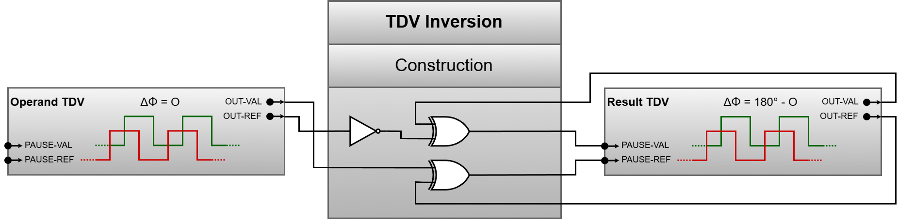
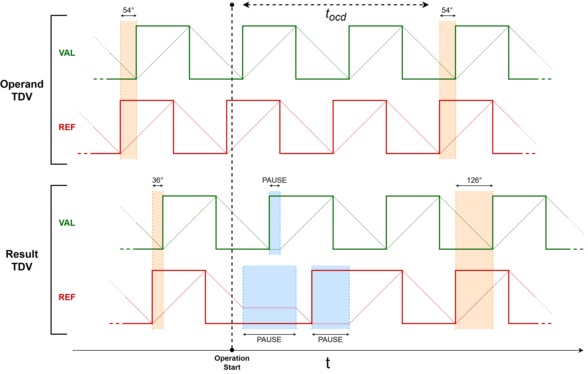
The TDV Addition Operation accepts two Operand TDVs and one Result TDV. The Result TDV's ∆Φ is assigned a value corresponding to a linear addition of the Operand TDVs' ∆Φ (see Figure 3.12).
Aligns the Operand TDVs' ∆Φ periods such that the 1st Operand TDV's ∆Φ falling edge matches the 2nd Operand TDV's ∆Φ rising edge.
In the context of the proposed PHOSCO framework, this can be achieved by simultaneously pausing the 1st Operand TDV's oscillator elements based on the output of an XOR logic gate taking the VAL oscillator element of the 1st Operand TDV and the REF oscillator element of the 2nd Operand TDV as its inputs.
Brings the Result TDV's VAL & REF oscillator elements in-phase with the VAL oscillator element of the 1st Operand TDV and the REF oscillator element of the 2nd Operand TDV respectively.
In the context of the proposed PHOSCO framework, this can be achieved by individually pausing the Result TDV's VAL & REF oscillator elements based on the outputs of two XOR logic gates respectively, the first one taking the VAL oscillator elements of the 2nd Operand & Result TDVs as its inputs, and the second one taking the REF oscillator elements of the 1st Operand & Result TDVs as its inputs. Thus, the TDV Addition operation's fop consists of three XOR digital logic gates (see Figure 3.11).
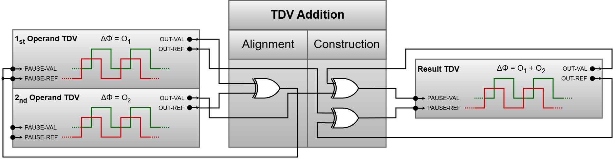
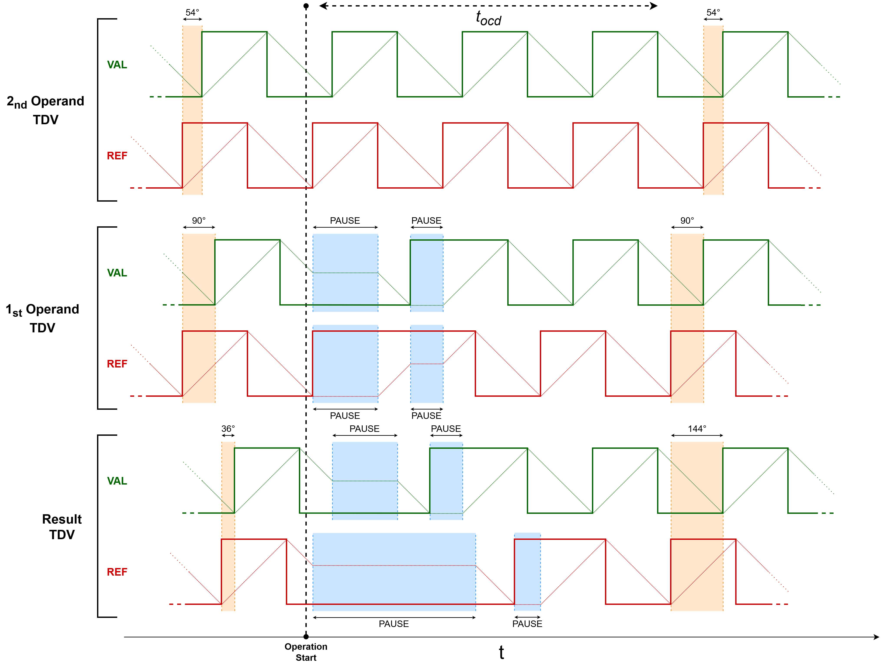
The TDV Subtraction Operation accepts two Operand TDVs and one Result TDV. The Result TDV ∆Φ assigned a value corresponding to a linear subtraction of the 1st Operand TDV from the 2nd Operand TDV (see Figure 3.14).
Aligns the Operand TDVs' ∆Φ periods such that the 1st Operand TDV's ∆Φ rising edge matches the 2nd Operand TDV's ∆Φ rising edge.
In the context of the proposed PHOSCO framework, this can be achieved by simultaneously pausing the 1st Operand TDV's oscillator elements based on the output of an XOR logic gate taking the REF oscillator elements of the Operand TDVs as its inputs.
Brings the Result TDV's VAL & REF oscillator elements in-phase with the VAL oscillator elements of the 1st Operand TDV and the 2nd Operand TDV respectively.
In the context of the proposed PHOSCO framework, this can be achieved by individually pausing the Result TDV's VAL & REF oscillator elements based on the outputs of two XOR logic gates respectively, the first one taking the VAL oscillator elements of the 2nd Operand & Result TDVs as its inputs, and the second one taking the VAL oscillator element of the 1st Operand TDV and the REF oscillator element of the Result TDVs as its inputs. Thus, the TDV Subtraction operation's fop consists of three XOR digital logic gates (see Figure 3.13).
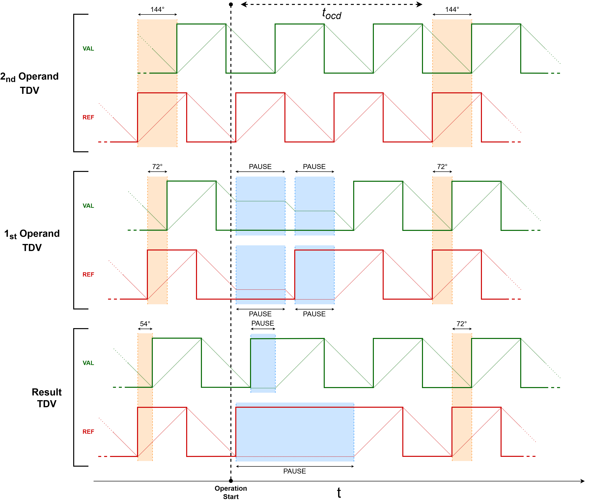
In the rapidly evolving search for low-power alternatives to conventional computing frameworks, many temporal and oscillator-based models have been developed and implemented to perform a wide range of computational tasks.
Similar oscillator-based temporal frameworks rely on dynamical relationships between the individual oscillators, such as coupling (see Section 4.4.1), to perform computation. This contrasts with the proposed PHOSCO model, in which there is a direct relationship between encoded analog values and relative phase differences between individual oscillators.
The physical mechanics of harmonically coupled oscillators have been studied extensively [41][42][43][44]. Instead of working against the natural tendency of neighboring oscillators to be drawn towards each others' oscillating phases, many oscillator-based computing models work with this coupling force to achieve computation. Given nature's prevalence of synchronization patterns, most of these coupled oscillator frameworks are particularly suited for solving problems and making models of dynamical systems present in nature. A notable example of such implementations are Ising machines [45][46][47]. These devices are used to find solutions for NP-hard combinatorial problems, known as Ising optimization problems, which usually involve minimizing an overall energy state in a node-based system. The natural tendency of coupled oscillators to match each others' oscillating phase and frequency at the lowest possible energy level makes them ideal for finding steady-states in Ising problems. Another use case of coupled oscillator machines is modeling and training of neural networks systems and predictive models [48][49]. Large arrays of oscillatory networks exhibit natural synchronizations between individual oscillator pairs, which allows for dynamic changes and permits the overall system to exhibit learning patterns. This behavior makes these types of oscillator networks an ideal candidate for representing and modeling large scale neural network systems, specifically with predictive tasks such as musical melody prediction [48] and signal anomaly detection [49], with significant advantages over their digital counterparts in terms of power efficiency. Coupled oscillator network systems share similarities with the proposed PHOSCO framework in the shared usage of oscillators to perform computation. However, coupled oscillators systems rely entirely on the group dynamics encoded in coupling forces within their networks to attain solutions for the tasks they're solving. This contrasts with the individual phase-based interactions between oscillators used in the proposed PHOSCO framework, which relies on independent and pre-determined relative phase difference management in order to store analog values and perform computation.
Similarly to the operating principle of coupled oscillator networks, individual oscillatory elements can also be selectively subjected to coupling forces to effectively draw their oscillating phases towards a fixed value. Such systems are well suited to simulate or represent a variety of digital systems. One of the earliest examples of a phase-based system that used coupled oscillators for digital data storage was Von Neumann's set of patents describing their proposed phase-based devices, such as the Phase-encoded Latch [50][51]. More recently, generalized models for digital information storage and simulation using coupled oscillators were developed [52][53]. Relative differences in oscillating phases between intentionally coupled oscillators were used to encode individual bits. Such phase-based devices have also been shown to demonstrate a significant degree of noise immunity, and fully-operational latching mechanisms were proposed as alternatives to conventional digital latching circuits [53]. These systems also rely on dynamical coupling forces to perform computation, albeit they do not use the generalized behavior of the network to calculate solutions for the tasks they solve, but are instead individually coupled to fixed reference values to represent binary systems. While this approach bears more similarities to the proposed PHOSCO framework in the usage of relative phase differences to encode information, they are most often used for representing and encoding digital values instead of analog ones.
The topic of hybrid hardware accelerators has seen increasing focus in recent years. With the increasing computational weight being exerted on the existing digital computing infrastructure, many complementary temporal models have been developed aimed at improving their operation in terms of speed and power efficiency. One example of such a previously proposed temporal device [34] uses temporal bistream data structures to represent digital values, where a pre-determined elapse of time within a digital signal sequentially encodes a set of bits in a digital number. Another notable example of such devices includes a vector-by-matrix multiplier hardware accelerator [54], in which analog vector-by-matrix multiplication was carried out by switch-capacitor-based multiplier circuits. Current-mode devices were used to manipulate and precisely control charging & discharging of capacitor-based delay-line modules, which allowed numerical information to be encoded as time differences and arithmetic operations to be performed. Memristor-based temporal systems were also previously modeled in the context of graph computations [37]. A temporal memory cell was constructed from a series of delay-line elements, each consisting of a set of memristor circuits. Each memristor effectively acted as a resistor that changes it's resistance based on historical current flows, which was used to encode streams of digital bits from a measured time delay. This memristor-based temporal memory cell was capable of storing and displaying its data, relying on a read signal to be delivered to commence its value displaying process. Temporal hardware accelerator devices share many similarities with the proposed PHOSCO framework, notably in the discrete-time execution nature and time difference value encoding. A hypothetical PHOSCO-based system could likewise be used as an accelerator of existing digital systems in a similar operating principle to many of the previously proposed temporal hardware accelerators.
A similar form of time-domain data & signal processing has previously been modeled as pulse-train processing [55]. Such frameworks propose a generalized model for time-domain arithmetic operations of addition, multiplication and convolution, in mathematical functions encoded as a series of electrical pulses. Rigorous mathematical proofs were proposed and analyzed, in which the modalities of linear [56] and non-linear [57] mathematical operations are studied in the context of temporal logic. This form of analog signal processing carries similarities to the proposed PHOSCO framework in terms of the continuous value-space computation performed with analog values encoded as cyclical time-differences. However, the PHOSCO model was proposed as a more fundamental framework designed to operate with individual numerical values instead of functional waveforms.
A series of time-difference circuits were previously proposed as a series of time-domain digital logical modules that performed analog TDV storage encoded as pairs of digital signals [39]. Similar TDV operation modules were also previously proposed, including time-domain adder and subtractor modules that performed arithmetic operations by artificially delaying the involved digital signals to achieve a relative phase difference change. An integer time-domain multiplier module was also presented, the Time-difference Amplifier [39], which effectively multiplied a TDV by an arbitrary integer value. A series of time difference analog latch circuits were also previously proposed [58][40]. These circuits also operated with analog values encoded as timing differences between digital signals, and stored them by intermittently discharging a holding capacitor. They would display the output value by discharging the remaining charge upon the receipt of a query signal, which allows for a single display process of the previously saved TDV. Such devices share similarities with the proposed PHOSCO framework in the exact encoding of analog values as time differences between digital signal edges, as well as performing linear arithmetic operations of TDV addition and subtraction. Most of the proposed circuits could be used as building blocks of a hypothetical PHOSCO-based system, especially in transient configurations that allow for repeated signal displays to support encoding of cyclical TDVs. Albeit, additional logic would have to be introduced to ensure TDV signal consistency, such as frequency and duty-cycle locking mechanisms, and allow for the continuous-time pausing actions that are characteristic of the proposed PHOSCO framework.
In order to provide a preliminary validation of the theoretical framework comprising the proposed PHOSCO model, it was important to develop a working proof-of-concept example of a phase-based oscillatory computing system. Thus, a PHOSCO-based prototype device was constructed with custom electrical analog oscillators, and evaluated with high-speed digital MCU systems (see Table 4.1).
| Implementation | Module | Amount | Purpose |
|---|---|---|---|
| Custom Analog Circuitry | Controllable Oscillator (see Section 4.2) |
6 | Provide VAL & REF oscillator elements for 3 simulated TDVs. |
| Frequency-Locking MCU | Frequency-Locking Logic (see Section 4.3.2) |
1 | Match frequency & tduty of all CO modules. |
| Operation MCU | TDV Simulation Logic (see Section 4.3.3) |
1 | Simulate TDV storage, reading & operation control logic with 3 TDVs. |
| Operation MCU | Evaluation Logic (see Section 4.3.4) |
1 | Monitors precision & longevity of all simulated TDVs and TDV operations. Saves evaluation data to micro-SD cards. |
Table 4.1: Constructed PHOSCO prototype architecture implementation.
The constructed PHOSCO prototype included 6 custom-designed oscillators, referred to as "Controllable Oscillator" (CO) modules (see Section 4.2). These were centered around the classic "555 timer" capacitor-based oscillator with frequency & tduty matching capabilities, and comprised 3 TDVs that were simulated within the experimental system. Variable resistive circuit elements were included within each CO module (see Section 4.2.1), controlled by the frequency-locking logic (see Section 4.3.2) implemented on a high-speed digital MCU (see Section 4.3.1), referred to as the "Frequency-Locking MCU" (FLL MCU). This experimental setup enabled all CO modules to operate around the same frequency & tduty. The TDV storage, reading and operational mechanics were simulated using custom-designed TDV simulation logic (see Section 4.3.3) implemented on another high-speed digital MCU, referred to as the "Operation MCU". The constructed PHOSCO prototype was comprehensively evaluated in terms of frequency & tduty matching accuracy (see Section 5.2.1), and TDV storage & operational precision (see sections 5.2.2 & 5.2.3) using custom-designed evaluation logic (see Section 4.3.4), also implemented on the Operation MCU. This experimental setup allowed for modular simulation & evaluation of 3 TDVs within the prototype system.
The basic building block of the constructed PHOSCO prototype is a custom-designed Controllable Oscillator (CO) electrical circuit, centered around the conventional "555" capacitor-based oscillator.
Circuit which generates a digital clock signal via repeated charging & discharging cycles of a timing capacitor [59][60][61].
The analog oscillating medium used by a capacitor-based oscillator, such as the 555 timer, is the charge stored in a timing capacitor attached to the oscillator's internal circuitry. The oscillator module toggles its output digital state upon the timing capacitor's stored charge reaching pre-determined thresholds during its oscillating cycles. The capacitance of the timing capacitor affects the output frequency. Common use cases for capacitor-based oscillators include low-power clock generation [62], function signal generators [63] and environmental sensing [64].
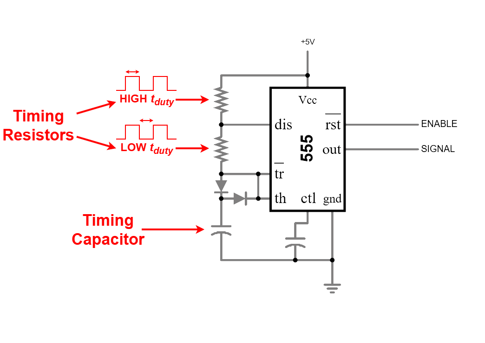
The custom CO modules implemented in the PHOSCO prototype are centered around the TLC555 CMOS-based integrated oscillator circuit [60]. It shares similarities with conventional 555 astable timer circuits [59] (see Figure 4.1), with the inclusion of additional logic to support the continuous-time oscillator pausing mechanics used in the proposed PHOSCO framework.
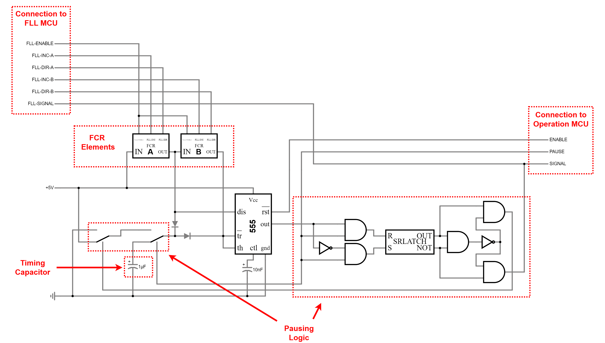
A pair of analog switches and an SR-latch are used to effectively isolate the timing capacitor, normally attached to the TRIGGER, DISCHARGE & THRESHOLD connections of a conventional 555 timer module through a pair of diodes (see Figure 4.2). This setup provides the capability of effectively pausing the oscillating cycles of the CO modules while preserving their analog oscillation states. The supplemental pausing logic is controlled by a digital input signal, denoted as the PAUSE input connection node, where the pausing mechanism is engaged when the PAUSE node is brought HIGH. Additionally, the ENABLE input node and the SIGNAL output node are connected to the RESET and OUT connections of the TLC555 module respectively. While conventional 555 timer modules are not designed for high-precision applications, with an estimated initial oscillation precision of ±1%, a 50 ppm/C° timing-temperature drift [59] and a non-linear oscillation curve, a key modification is introduced into these custom CO modules aimed at improving their frequency & tduty matching capabilities. The charging & discharging resistors that control the HIGH & LOW tduty of their generated output signals, referred to as "timing resistors" and normally attached to the TRIGGER, DISCHARGE and THRESHOLD connections of a conventional 555 timer module, are replaced with custom-designed controllable variable resistors, referred to as "Frequency Control Resistors" (FCRs). The design of these FCR elements consisted of a controllable digital potentiometer with a high degree of resistance resolution (see Section 4.2.1), to allow precise control of tduty pertaining to the output signals generated by the CO modules. A pair of FCR elements was present in each CO module (see Figure 4.2), and were controlled by the Frequency-Locking Logic implemented on the FLL MCU (see Section 4.3.2). The FCR element whose connection nodes were connected to the primary voltage source & the 555 modules's DISCHARGE connection, referred to as "FCR A", was responsible for controlling the HIGH tduty duration of the output signal. The FCR element whose connection nodes were connected to the 555 modules's DISCHARGE & TRIGGER connections, referred to as "FCR B", was responsible for controlling the LOW tduty duration of the output signal. Increasing the effective resistance of an FCR element increases the duration of the tduty duration its responsible for. Therefore, by using a 1 μF timing capacitor, the custom CO modules were expected to operate at an operating frequency 250 Hz, corresponding to a tduty duration of 2,000 μs.
Each CO module was subsequently connected to the Frequency-Locking & Operation MCUs via a set of digital data lines pertaining to each MCU. The connection set pertaining to the Operation MCU consisted of 3 data lines (see Table 4.2), which allowed for effective control of the relative oscillation phases of each CO module and by the TDV Simulation Logic (see Section 4.3.3). The connection set pertaining to the Frequency-Locking MCU consisted of 5 data lines (see Table 4.3), which allowed for effective control of the individual CO module's operating frequency & tduty by the Frequency-Locking Logic (see Section 4.3.2).
| Line | Type | Purpose | Function | |
|---|---|---|---|---|
| HIGH | LOW | |||
| ENABLE | digital input | Controls the operational state of CO module. | Module is enabled & oscillations take place normally. | Module is disabled & oscillations cannot take place. |
| PAUSE | digital input | Controls the pause state of CO module. | Oscillations proceed as normal. | Oscillations are paused & the analog oscillatory state is preserved. |
| SIGNAL | digital output | Output digital clock signal of CO module. | N/A | |
Table 4.2: Connection mapping from each CO module to Operation MCU.
| Line | Type | Purpose | Function | |
|---|---|---|---|---|
| HIGH | LOW | |||
| FLL-ENABLE | digital input | Controls operational state of FCR modules. | FCR modules are enabled & frequency alteration actions can take place. | FCR modules are disabled & are configured to their default effective resistance state. |
| FLL-SET-A | digital input | Changes the effective resistance of FCR A, and the HIGH delay of the generated clock signal. | The effective resistance of FCR A is changed on a rising edge. | The effective resistance of FCR A remains unchanged. |
| FLL-DIR-A | digital input | Determines the resistance change direction for FCR A resistance changes. | The effective resistance of FCR A is increased, increasing the HIGH delay of the generated clock signal. | The effective resistance of FCR A is decreased, decreasing the HIGH delay of the generated clock signal. |
| FLL-SET-B | digital input | Changes the effective resistance of FCR B, and the LOW delay of the generated clock signal. | The effective resistance of FCR B is changed on a rising edge. | The effective resistance of FCR B remains unchanged. |
| FLL-DIR-B | digital input | Determines the resistance change direction for FCR B resistance changes. | The effective resistance of FCR B is increased, increasing the LOW delay of the generated clock signal. | The effective resistance of FCR B is decreased, decreasing the LOW delay of the generated clock signal. |
| FLL-SIGNAL | digital output | Output digital clock signal of FLL module, used by FLL MCU to track operating frequency. | N/A | |
Table 4.3: Connection mapping from each CO module to the FLL MCU.
The design of the Frequency-Control Resistor (FCR) elements implemented in each CO module consisted of a digital potentiometer circuit, with a resolution of 1 Ω per resistance step, and a precision of 12 bits (see Figure 4.3). This gave an estimated possible resistance range of 0 Ω to 4,096 Ω for each FCR element.
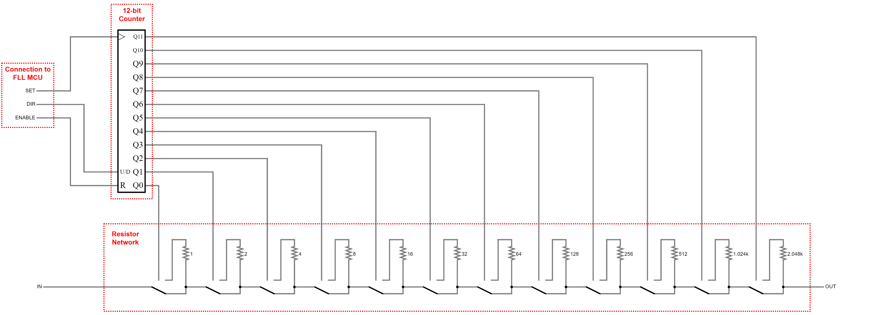
This resistor network was controlled by a set of 12 digital data lines. It included a set of 12 resistive sections, corresponding to effective resistances of 1 Ω, 2 Ω, 4 Ω, 8 Ω, 16 Ω, 32 Ω, 64 Ω, 128 Ω, 256 Ω, 512 Ω, 1,024 Ω & 2,048 Ω. Each resistive section was connected in series through a set of 12 SPDT analog switches, which were controlled by a 12-bit bi-directional digital counter. This 12-bit counter element was designed with a set of 12 JK Flip-Flop circuit elements, and connected to the FLL MCU via a set of 3 digital data lines (see Table 4.3).
This FCR design allowed for incremental resistive steps of approximately 1 Ω upon the arrival of a rising edge of the FCR's SET digital data line. Each resistive step direction was determined by the state of the DIR digital data line at the moment of increment, with a state of HIGH corresponding to an increase and a state of LOW corresponding to a decrease. This setup was expected to produce tduty duration steps of approximately 11 μs at each effective resistance increment.
The custom CO elements that comprised the constructed PHOSCO prototype were controlled & managed by a set of three logical modules (see Figure 4.4), developed & implemented on a pair of high-speed digital microcontroller systems (MCUs). Each MCU system consisted of a simple digital microprocessor, with the capabilities of managing a set of digital data lines, executing logical instruction sequences written as high-level code and measuring timing intervals on a reasonably accurate scale. These MCU systems controlled the individual CO elements via a set of digital data lines (see Tables 4.2 & 4.3), which permitted their logical elements to perform frequency-locking operations, TDV simulation and precision evaluations on the constructed prototype.
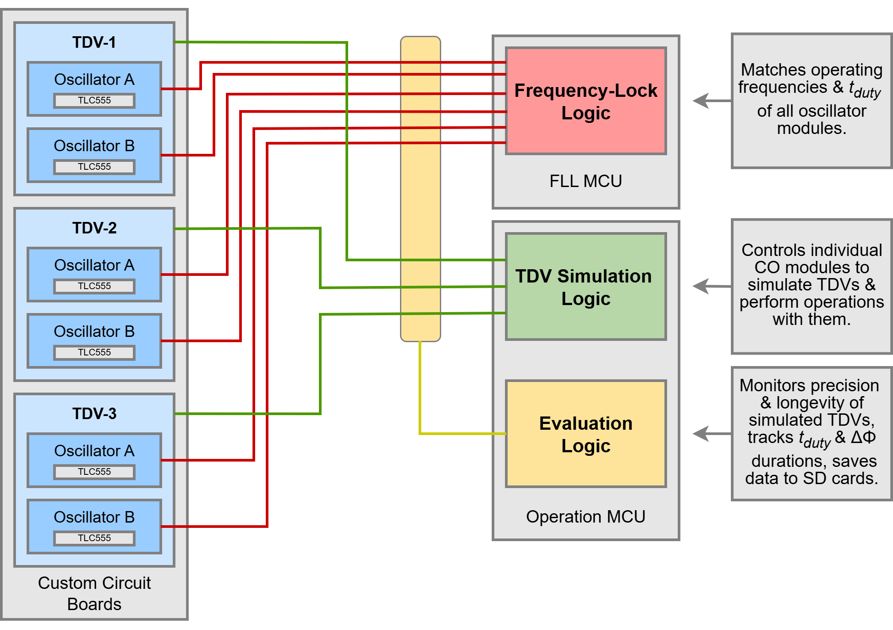
The frequency-locking logic module (see Section 4.3.2), responsible for matching the tduty durations of all CO modules in the constructed prototype, was implemented on the Frequency-Locking MCU (FLL MCU). The TDV simulation logic module (see Section 4.3.3) and the evaluation logic (see Section 4.3.4), responsible for storing analog numerical values as TDVs (see Section 3.2), simulating arithmetic TDV operations (see Section 4.3.3.2) and performing tduty & ∆Φ measurements, were implemented on the Operation MCU.
The use of high-speed digital MCUs to implement & simulate the various logical elements of the constructed PHOSCO prototype, instead of designing & implementing dedicated control & evaluation circuitry, was undertaken for three primary reasons.
Firstly, this approach was expected to enable a straightforward & modular development cycle of the various logical elements comprising the constructed PHOSCO prototype, while maintaining a relatively high degree of operational & evaluation accuracy. The usage of code-based logical algorithms for simulation & evaluation tasks, instead of designing dedicated circuit modules for each of the logical tasks, greatly reduced the overall complexity of the prototype design & construction process (see Chapter 5). This allowed for the development of a comprehensive set of evaluation procedures, and a straightforward evaluation data visualization workflow (see Section 4.3.4).
Secondly, this approach was expected to reduce the overall amount of electrical noise present in the system. Dedicated control circuit elements for the frequency-locking, TDV simulation & evaluation logical modules would likely rely on additional oscillators or timers to provide references for tduty matching processes & evaluation procedures (see Section 6.2.1). This approach would maintain a high likelihood of introducing further electrical disturbances into all implemented oscillator modules, in addition to the already present coupling interactions that are characteristic of concurrently-running electrical oscillators (see Section 4.4.1).
Thirdly, this approach was expected to greatly reduce the overall construction costs and lead times encountered during the design & construction process of the PHOSCO prototype (see Chapter 5). Since each implemented CO module was built with custom-designed analog & digital circuits (see Section 5.1.1), these custom circuit modules were fabricated & assembled as printed circuit boards (PCBs) by a contemporary circuit board manufacturer (see Section 5.1.3). The fabricated & assembled PCB elements were subsequently connected together via manual soldering, which required a further investment of time and resources (see Section 5.1.4). Including additional dedicated control circuit elements for each logical module would have significantly increased the construction costs and lengthened the construction process of the constructed PHOSCO prototype.
Despite the mentioned advantages brought by the usage of digital MCU systems for the development & execution of the logical elements comprising the constructed PHOSCO prototype, a significant expected drawback of this approach was the degree of error in the accuracy of the simulation & evaluation procedures executed on the constructed prototype. Since the proposed PHOSCO framework operates in the continuous value-space, the usage of digital MCU systems to perform timing measurements was expected to inherently introduce a degree of error in all evaluation datasets. Thus, it was crucial to choose a digital MCU component with a very high operating speed, while maintaining a relatively simple programming protocol & interface (see Section 4.3.1).
The digital MCU component chosen for the implementation of the frequency-locking, operation simulation & evaluation logic of the constructed PHOSCO prototype was the Teensy 4.1 microcontroller, produced by the company PJRC. The Teensy 4.1 contains a Cortex-M7 ARM-based processor, operating at a default CPU speed of 600 MHz, alongside 8 MB of FLASH memory and 1 MB of RAM [65]. It supports 42 digital input & output connections operating at 3.3V, which are easily accessible via standard-size physical pins, alongside a pre-installed micro-SD card slot. It supports a straightforward programming interface using the Arduino IDE software development platform, with program sequences written as high-level C++ code and programmed via UART-based protocols over a USB connection (see Section 5.1.5). These features represent a significant speed & memory improvement over contemporary Arduino-based microcontroller systems, commonly manufactured with CPU speeds of under 20 MHz, far lower FLASH memory size and lacking pre-installed micro-SD card support. The fast operating speed, extensive set of accessible digital input & output lines, micro-SD card support, a simple programming interface and relatively low cost made the Teensy 4.1 an ideal component choice for the implementation of the FLL & Operation MCUs.
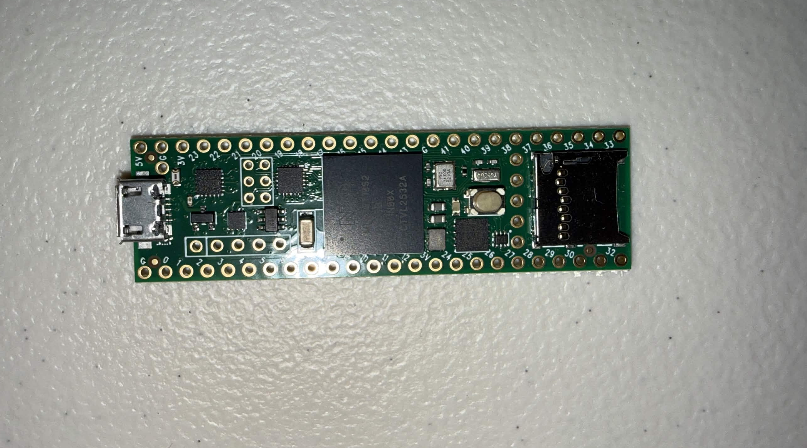
Additionally, unlike most other Arduino-based microcontrollers, the Teensy 4.1 possesses the ability to measure timing intervals in the sub- μs range. This is accomplished with the usage of the ARM_DWT_CYCCNT internal register, present in most conventional ARM processors. Being incremented on every CPU instruction cycle, accessing that internal register permits timing measurements in the sub- μs range with a known CPU clock speed, after being properly initialized at MCU startup. This feature allows for a higher degree of accuracy of all timing measurements and evaluations performed on the Teensy 4.1.
The frequency-locking logic used in the constructed PHOSCO prototype, implemented on the Frequency-Locking MCU, relied on repeated comparisons of the HIGH and LOW tduty durations achieved by all CO modules to a reference target duration. Following a tduty duration comparison, the measured CO's respective FCR module is altered to more closely match the tduty of its output signal to the target duration. This FLL logic was implemented with a custom closed-loop algorithm.
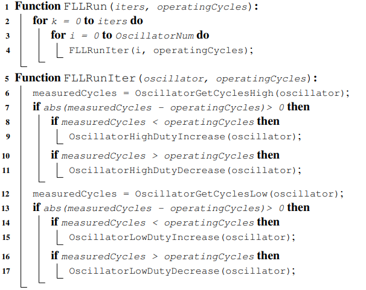
During an iteration of the custom frequency-locking algorithm (see Algorithm 4.1), defined as the FLLRunIter function (see Listing L.1, lines 171–207), the HIGH and LOW tduty durations of a CO module's output signal module are repeatedly queried until a state change is detected. This polling-based tduty duration measurement was implemented in the OscillatorGetCycles function (see Listing L.1, lines 232–296), and measured in CPU cycles. If the measured tduty did not match the target duration, provided as the operatingCycles argument, the FILL-SET data line of the measured CO's respective FCR element was brought HIGH for a brief duration of time, starting at the conclusion of the tduty duration measurement. The rising edge of the FLL-SET data line changed the effective resistance of its respective FCR element by triggering its 12-bit counter on a rising edge, and incrementing it in the direction determined by its FLL-DIR data line. The respective FCR's FLL-DIR data line was simultaneously changed depending on the measured duration. If the measured tduty duration was greater than the target duration, the respective FLL-DIR data line was brought LOW, resulting in a decrease of the respective FCR element's effective resistance, and a decrease in the CO's respective tduty duration (see figures 4.6 & 4.7) (see Listing L.1, lines 339–364). If the measured tduty duration was smaller than the target duration, the respective FLL-DIR data line was brought HIGH, resulting in an increase the respective FCR element's effective resistance, and an increase in the CO's respective tduty duration (see figures 4.6 & 4.7) (see Listing L.1, lines 311–336).
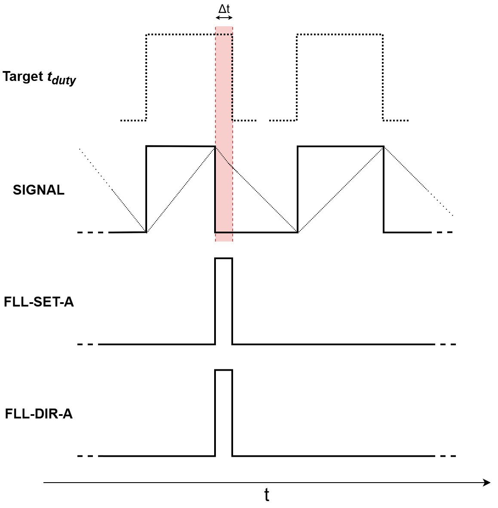
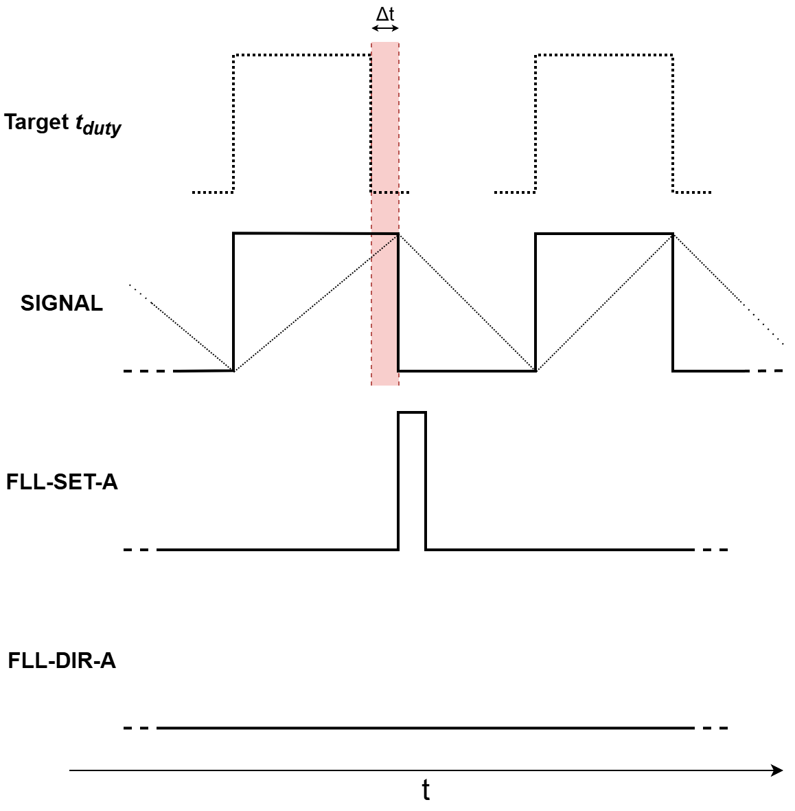
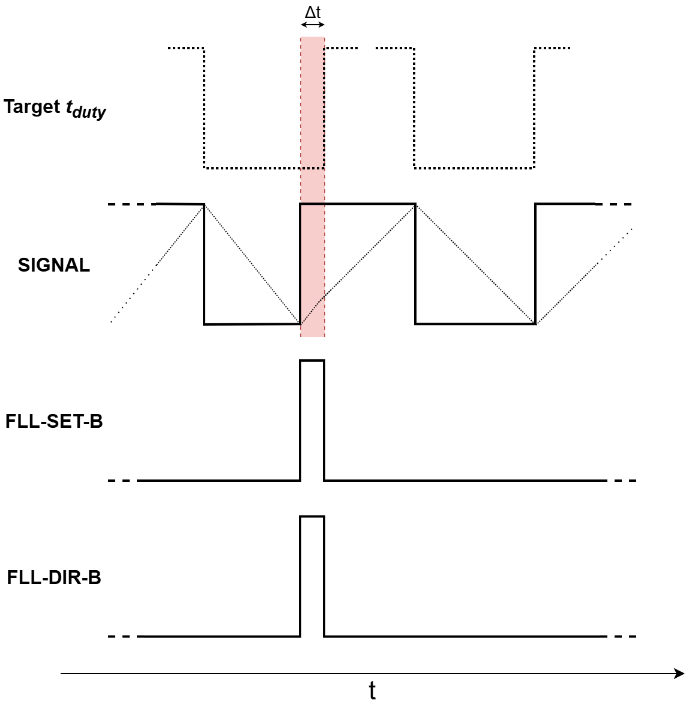
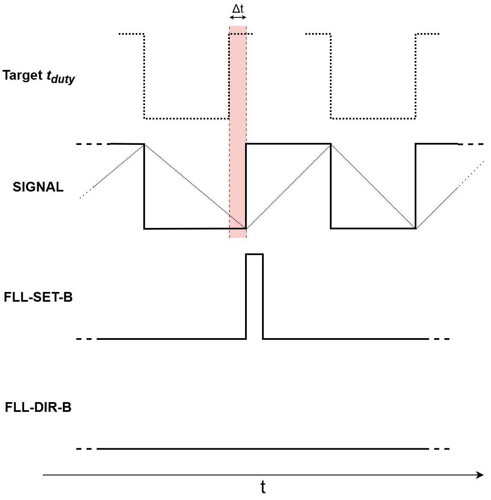
This tduty comparison and adjustment action was sequentially repeated for all CO modules connected to the FLL MCU, and executed iteratively in the FLLRun function (see Listing L.1, lines 110–168). The custom frequency-locking algorithm was executed for an indefinite duration of time on the FLL MCU, and its performance was expected to depend greatly on the operating frequencies of the CO modules and the CPU speed of the FLL MCU. Since the algorithm performs repeated measurements of each CO module's output by waiting for rising & falling edges in their output signal, it was expected to be most effective when the operating CPU speed of the FLL MCU was held much higher than the operating frequencies of the CO modules. The frequency-locking logic operated independently of any simulation & evaluation processes undertaken by the TDV simulation & evaluation logic.
The TDV storage and operation simulation logic used in the constructed PHOSCO prototype, implemented on the Operation MCU, was responsible for controlling the individual CO modules, storing values in the 3 simulated TDVs, reading their values and performing arithmetic operations with them. It relied on the oscillator pausing mechanics (see Section 3.2.1), implemented in each CO module (see Section 4.2), to issue periodic pausing actions on them in order to achieve the desired ∆Φ changes between CO pairings and simulate the ∆Φ alignment of TDV operations.
The TDV storage simulation logic (see Section 4.3.3.1) used a custom algorithm that matched a simulated TDV's ∆Φ to an input numerical value, provided within a range between 0.0 and 1.0. It used another custom algorithm to read the ∆Φ of a simulated TDV, likewise returning the measured duration as an output numerical value between 0.0 and 1.0. The TDV operation simulation logic (see Section 4.3.3.2) used a set of custom algorithms that performed the ∆Φ matching & alignment actions pertaining to each TDV operation type (see Section 3.3). All simulated TDV operations could be executed arbitrarily with any simulated TDV in the constructed PHOSCO prototype.
The TDV storage simulation logic used a custom algorithm that proportionally matched the ∆Φ between a simulated TDV's CO pairing to an input value. This algorithm relied on the usage of the oscillator pausing mechanic to issue pausing actions on the target TDV's VAL oscillator element, until the TDV's ∆Φ matched the desired value.
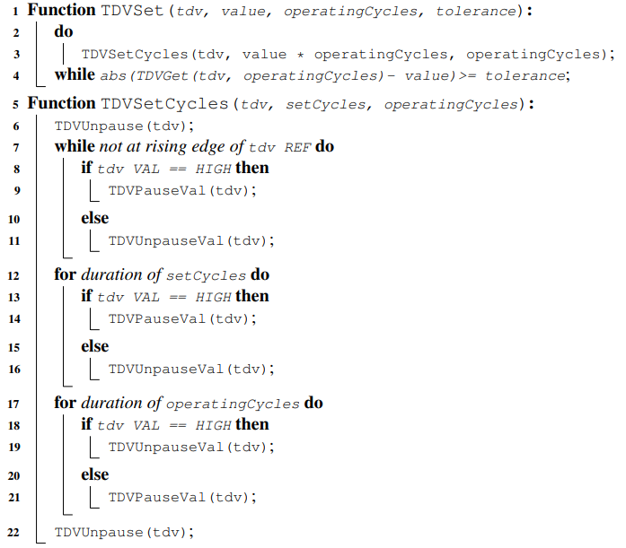
This algorithm (see Algorithm 4.2), implemented in the TDVSet function (see Listing L.2, lines 1239–1261), accepts the target TDV as the tdv argument, and the input numerical value as the value argument. The input value was provided as a decimal number ranging between 0.0 and 1.0, corresponding to a ∆Φ range between 0° (in-phase) and 180° (out-of-phase). The algorithm subsequently converts the provided input value to a corresponding time duration, measured in CPU cycles, and executes the TDVSetCycles function (see Listing L.2, lines 1265–1326), which proceeds to wait until a rising edge of the TDV's REF oscillator element was encountered. During this first waiting period, the target TDV's VAL oscillator element is paused if status is HIGH. The algorithm subsequently waits for a duration of time corresponding to the input value, previously calculated in the TDVSet function, during which the target TDV's VAL oscillator element is again paused if its state is HIGH. Finally, the algorithm subsequently waits for a duration of tduty, during which the target TDV's VAL oscillator element is paused if its output state is LOW. Following this waiting & pausing sequence executed in the TDVSetCycles function, the changed ∆Φ value of the target TDV was verified by executing the TDV ∆Φ reading algorithm (see Algorithm 4.3), and comparing measured value to the desired input. If the read ∆Φ value closely matched the desired input, as determined by the tolerance argument, the TDV storage algorithm is concluded.
The custom algorithm for reading the ∆Φ value of a simulated target TDV relied on a precise measurement of the elapsed time duration between the rising edges of the target TDV's REF & VAL oscillator elements.
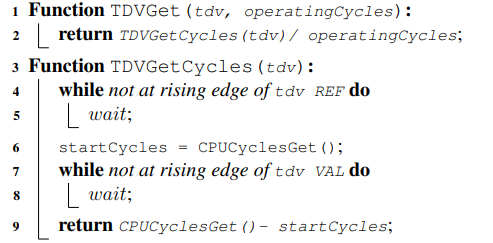
This algorithm (see Algorithm 4.3), implemented in the TDVGet function (see Listing L.2, lines 1331–1345), accepts the target TDV as the tdv argument. The algorithm subsequently proceeds to execute the TDVGetCycles function (see Listing L.2, lines 1349–1380), which waits until a rising edge of the target TDV's REF oscillator element was encountered. The algorithm subsequently stored the current CPU cycle iteration by reading the value of the ARM_DWT_CYCCNT internal register, and proceeds to wait until a rising edge in the target TDV's VAL oscillator element was encountered. The elapsed time was then calculated by subtracting the current CPU cycle iteration from the previously-stored one, and the calculated ∆Φ was returned to the TDVGet function as a time duration, measured in CPU cycles. Finally, the algorithm converts the measured ∆Φ to a value between 0.0 & 1.0, and the algorithm is concluded by the return of this final decimal value.
These two algorithms, implemented in the TDVSet & TDVGet functions respectively, were arbitrarily executable by other elements of the TDV simulation & evaluation logic modules.
The TDV operation simulation logic relied on a set of custom algorithms to perform the ∆Φ matching & alignment actions of each TDV operation type proposed in the theoretical PHOSCO model. These custom algorithms directly simulated the digital logic gates comprising the fop of each operation type, and issued pausing actions on the provided Operand & Result TDVs' oscillator elements as determined by their respective fop circuits.
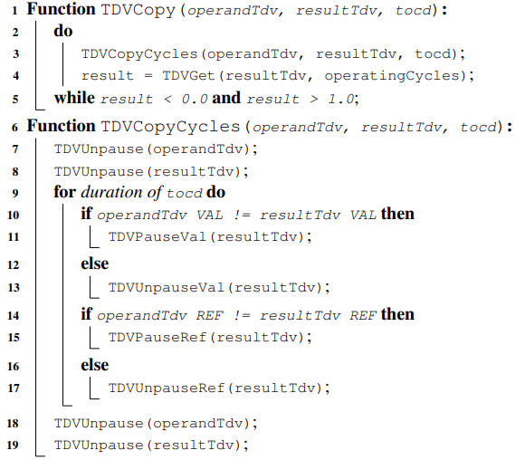
This algorithm (see Algorithm 4.4), implemented in the TDVCopy function (see Listing L.2, lines 1169–1189), accepts the Operand TDV as the operandTdv argument, and the Result TDV as the resultTdv argument. It subsequently executes the TDVCopyCycles function (see Listing L.2, lines 1192–1216), which simulates the fop pertaining to the TDV Copy operation (see Section 3.3.1) for the duration of tocd, provided as the tocd argument. Finally, the algorithm ensures that the ∆Φ of the Result TDV is located within the valid range of 0° & 180°, and concludes the simulation of the Copy operation.
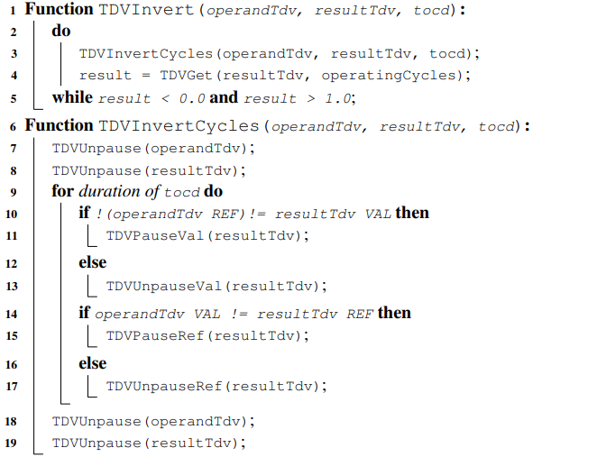
This algorithm (see Algorithm 4.5), implemented in the TDVInvert function (see Listing L.2, lines 1117–1137), accepts the Operand TDV as the operandTdv argument, and the Result TDV as the resultTdv argument. It subsequently executes the TDVInvertCycles function (see Listing L.2, lines 1140–1164), which simulates the fop pertaining to the TDV Inversion operation (see Section 3.3.2) for the duration of tocd, provided as the tocd argument. Finally, the algorithm ensures that the ∆Φ of the Result TDV is located within the valid range of 0° & 180°, and concludes the simulation of the Inversion operation.
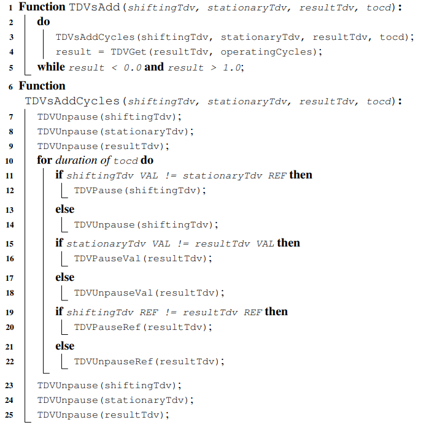
This algorithm (see Algorithm 4.6), implemented in the TDVsAdd function (see Listing L.2, lines 1055–1075), accepts the 1st Operand TDV as the shiftingTdv argument, the 2nd Operand TDV as the stationaryTdv argument, and the Result TDV as the resultTdv argument. It subsequently executes the TDVsAddCycles function (see Listing L.2, lines 1078–1112), which simulates the fop pertaining to the TDV Addition operation (see Section 3.3.3) for the duration of tocd, provided as the tocd argument. Finally, the algorithm ensures that the ∆Φ of the Result TDV is located within the valid range of 0° & 180°, and concludes the simulation of the Addition operation.
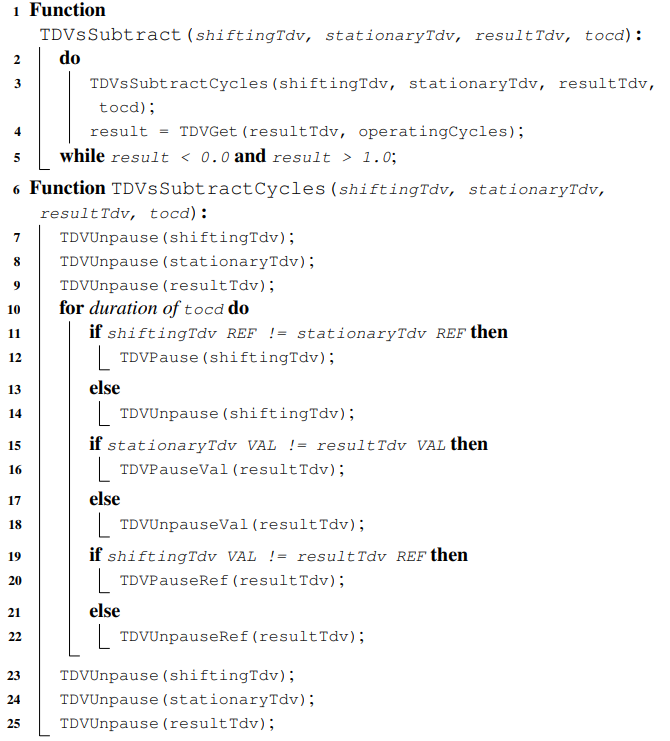
This algorithm (see Algorithm 4.7), implemented in the TDVsSubtract function (see Listing L.2, lines 993–1013), accepts the 1st Operand TDV as the shiftingTdv argument, the 2nd Operand TDV as the stationaryTdv argument, and the Result TDV as the resultTdv argument. It subsequently executes the TDVsSubtractCycles function (see Listing L.2, lines 1016–1050), which simulates the fop pertaining to the TDV Subtraction operation (see Section 3.3.4) for the duration of tocd, provided as the tocd argument. Finally, the algorithm ensures that the ∆Φ of the Result TDV is located within the valid range of 0° & 180°, and concludes the simulation of the Subtraction operation.
These algorithms, and their respective implementation functions, were arbitrarily executable by other logical elements of the operation & evaluation logic modules.
The constructed PHOSCO prototype was evaluated in terms of the following metrics:
These evaluations were carried out by periodic tduty and ∆Φ tracking sessions of the CO modules implemented in the constructed PHOSCO prototype. The frequency-locking capabilities of the individual CO modules were evaluated by consistently measuring the tduty durations of their output signals over a period of time, during active frequency-locking processes. The TDV storage & operation precision of the simulated TDVs were evaluated by consistently measuring their ∆Φ over a period of time, immediately after the execution of storage & operation simulation algorithms. A wide array of different input value sets was tested for each operation type, and the average result error & deviation were measured for each operation type across all tested input values. All measured tduty & ∆Φ durations were stored on a micro-SD card connected to the Operation MCU's pre-installed SD card slot. Following each evaluation & tracking session, the stored evaluation data was transferred to a Windows 11 system, and visualized with a pair of custom parsing & visualization scripts (see Listings M.1 & M.2), developed in Python, on version 3.12.7 [66], and the matplotlib [67] graphical visualization library.
In order to evaluate the frequency-locking capabilities of the individual CO modules implemented in the constructed PHOSCO prototype, a testing algorithm aimed at tracking the HIGH and LOW tduty durations of their generated output signals was developed as part of the evaluation logic module. It relied on repeated & consistent measurements of the HIGH & LOW tduty durations during active frequency-locking processes (see Section 4.3.2).
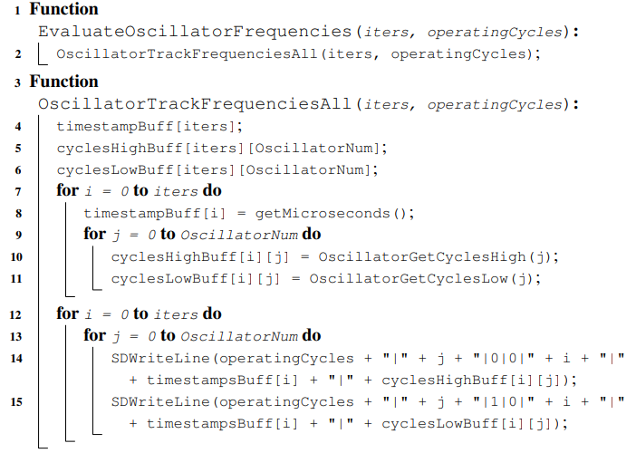
This algorithm (see Algorithm 4.8), implemented in the EvaluateOscillatorFrequencies function (see Listing L.2, lines 978–986), performed repeated time duration measurements of each CO's output signal iteratively, for a specified number of iterations provided by the iters argument. Each duration measurement, measured in CPU cycles, was stored in a large pre-allocated array, defined as cyclesHighBuff & cyclesLowBuff in the OscillatorTrackFrequenciesAll function (see Listing L.2, lines 1601–1648) for the HIGH & LOW tduty durations respectively, alongside a timestamp value for each reading. Upon the measurement of the final duration in the sequence, the measured durations were stored in a single TXT file on the micro-SD card connected to the Operation MCU (see Figure 4.8).
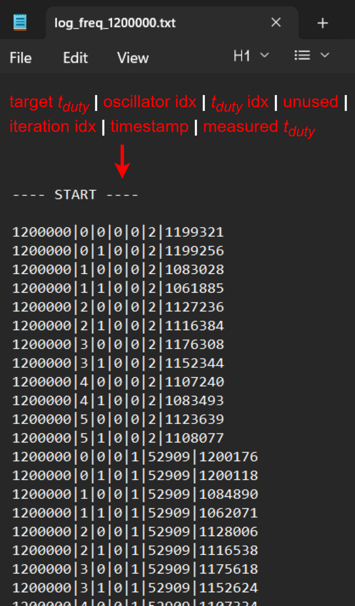
The saved tduty duration data was subsequently transferred to a Windows system upon the conclusion of the testing sequence, and the data was graphically visualized with a set of plots, showing the measured HIGH & LOW tduty durations with respect to time (see Section 5.2.1). These plots were generated by a custom Python-based parsing & plotting script (see Listing M.1). The measured tduty durations could then be visually assessed in terms of their similarity to the expected target duration.
In order to evaluate the precision & storage longevity of the TDVs simulated in the constructed PHOSCO prototype, a testing algorithm aimed at tracking their ∆Φ values was developed as part of the evaluation logic module. This algorithm relied on repeated & consistent measurements of the ∆Φ durations pertaining to each simulated TDV, immediately after the execution of the TDVSet algorithm (see Section 4.3.3.1).
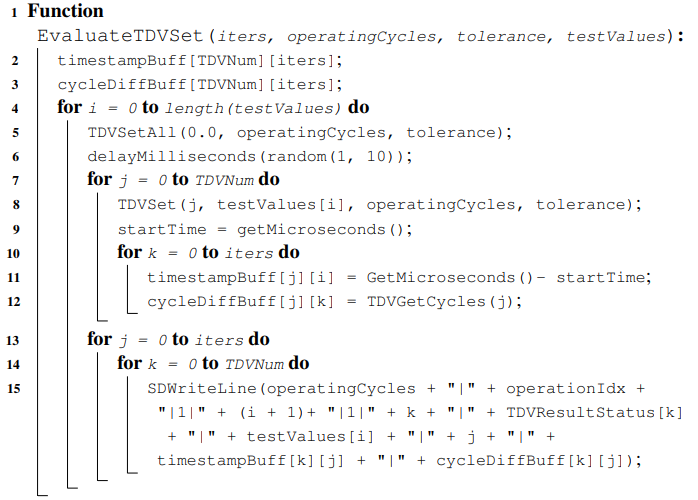
This algorithm (see Algorithm 4.9), implemented in the EvaluateTDVSet function (see Listing L.2, lines 887–974), executed the TDVSet algorithm repeatedly for a predetermined set of testing values (see Appendix B), defined as testValues (see Listing L.2, lines 897–907), with all simulated TDVs. Each execution of the TDVSet algorithm was followed by a ∆Φ tracking session of a specified number of iterations, provided as the iters argument. Each ∆Φ measurement represented the measured elapsed time duration between the rising edge of the respective TDV's REF oscillator element, and the rising edge of its VAL oscillator element, measured in CPU cycles. These ∆Φ measurements were stored in a large pre-allocated array, defined as cycleDiffBuff, alongside a timestamp value for each reading. The measured durations were stored in one TXT file per test value on the micro-SD card connected to the Operation MCU (see Figure 4.9).
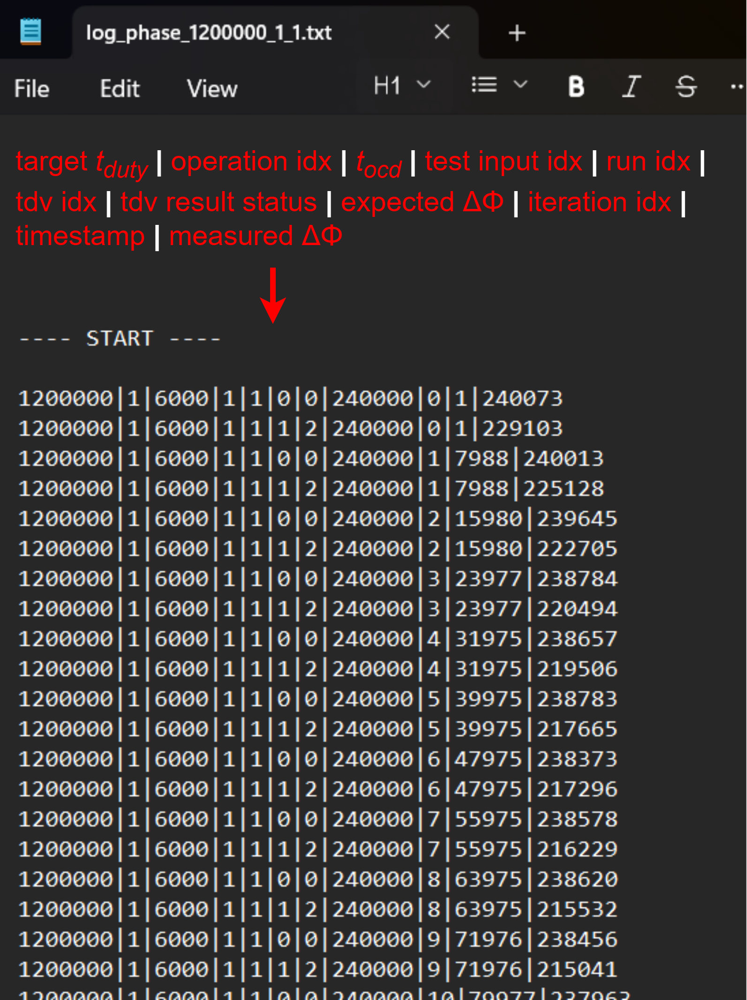
The saved ∆Φ duration data was subsequently transferred to a Windows system upon the conclusion of the testing sequence, and underwent limited processing to generate combined graphical visualizations representing the overall average values & standard deviation of all ∆Φ measurements for each tested input value. The raw ∆Φ measurements were subtracted from their respective expected values, combined into large measurement arrays pertaining to each tested input, and the average & standard deviation figures were calculated from the combined dataset. Originally measured in CPU cycles, the processed data was converted to values within the 0° to 180° range, and was subsequently visualized in a set of plots, showing the average ∆Φ values along with their standard deviation with respect to time, for each tested input value (see Section 5.2.1). These plots were generated by a custom Python-based parsing & plotting script (see Listing M.2, lines 92–222). The measured ∆Φ error & deviation data could then be visually assessed for each tested input, in terms of their similarity to the expected target values.
In order to evaluate the precision & result longevity of the TDV operations simulated in the constructed PHOSCO prototype, a set of testing algorithms aimed at tracking the resultant ∆Φ values produced by each operation type were developed as part of the evaluation logic module. These algorithms relied on repeated & consistent measurements of the ∆Φ durations pertaining to the TDVs involved in each operation test run, immediately after the execution of a given operation's simulation algorithm (see Section 4.3.3.2), over a predetermined set of tocd values.
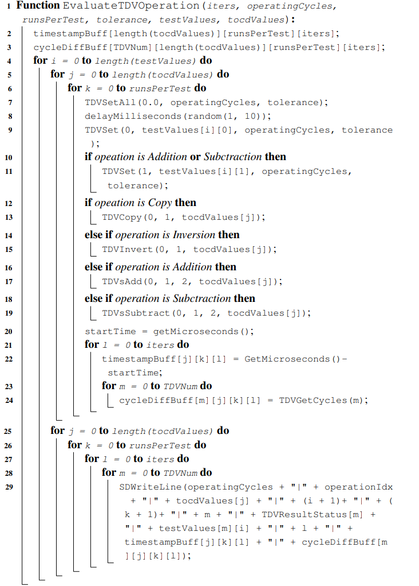
This algorithm (see Algorithm 4.10), implemented for each operation type in the EvaluateTDVCopy (see Listing L.2, lines 744–883), EvaluateTDVInversion (see Listing L.2, lines 600–740), EvaluateTDVAddition (see Listing L.2, lines 395–596) and EvaluateTDVSubtraction (see Listing L.2, lines 190–391) functions respectively, executed the TDVSet algorithm for the Operand TDVs, over a pre-determined set of testing values (see Appendix B), defined as testValues. Each execution of the TDVSet algorithm on the Operand TDVs was followed by a ∆Φ tracking session of the Result TDV for a specified number of iterations, provided as the iters argument. Each ∆Φ measurement represented the measured elapsed time duration between the rising edge of the Result TDV's REF oscillator element, and the rising edge of its VAL oscillator element, measured in CPU cycles. These ∆Φ measurements were stored in a large pre-allocated array, defined as cycleDiffBuff, alongside a timestamp value for reach reading. The measured durations were stored in one TXT file per test value on the micro-SD card connected to the Operation MCU, with the same data formatting used in the storage evaluation logic. This set of testing algorithms was used for two types of evaluations pertaining to the simulated TDV operations.
The first evaluation metric that was investigated using this testing algorithm was determining whether each TDV operation type maintained a unique set of ideal tocd values. To this end, the testing algorithm of each TDV operation was executed with a wide range of tocd values, as defined by the tocdValues argument, in order to effectively conduct a parameter-space search for tocd in each TDV operation type. This parameter-space exploration task was conducted with very brief ∆Φ tracking sessions, to focus the attained results solely on the initial resultant values immediately after the execution of an operation. Using the same data storage scheme described in the TDV Storage evaluation section (see Section 4.3.4.2), the attained ∆Φ data contained a set of results pertaining to each tested tocd value. This data was subsequently parsed & processed with a custom Python-based visualization script (see Listing M.2, lines 402–463), which collected the result error average & standard deviation figures of all test conducted for each operation type, and correlated them to the respective tocd values they were tested with. This resulted in a set of graphical plots that visualized the average Result TDV error & deviation, with respect to the tested tocd values (see Section 5.2.3). The ideal tocd values for each TDV operation type could then be visually assessed for each tested input by observing any areas in the resultant plots that displayed a very low degree of average error & deviation.
Following the tocd parameter-space search, assuming an ideal set of values for tocd was found for all operations, each TDV operation type was further evaluated with an expanded set of test inputs and their respective ideal tocd values. The same testing algorithm was used, with the ideal tocd values as a singular parameter, and with longer ∆Φ tracking sessions executed immediately after each operation execution. This data was subsequently parsed & processed with a custom Python-based visualization script (see Listing M.2, lines 224–400), which collected the result error average & standard deviation figures of all tests conducted, and visualized the average Result TDV error & deviation for each operation type. These visualizations contained graphical plots showing the average Result TDV error & deviation, with respect to time, for each operation type (see Section 5.2.3). The overall measured ∆Φ error of the results produced by each operation, with their ideal tocd values, could then be visually assessed as a function of time for each operation type.
Furthermore, in order to discover any potential correlations between the observed result error for each operation type and the input values included in each testing set, a further set of graphical visualizations was created to assess these possibilities. These visualizations contained graphical plots showing the average Result TDV error & deviation of each operation type, correlated to their respective test input values supplied as the Operand TDVs during the testing sequences (see Listing M.2, lines 465–545). The overall measured ∆Φ error of the results produced by each one of the tested inputs in each operation type could then be visually assessed, in terms of their similarity to an error of 0%.
In order to account for the expected degree of error included in all time duration & ∆Φ measurements due to digital MCU simulation & electrical noise (see Section 4.4), an overall error tolerance threshold of ±10%, of tduty, was imposed on all evaluation metrics. Each simulated TDVs' ∆Φ was tracked over a duration of 10 seconds, immediately after the execution of the storage simulation algorithm, over all the test inputs. At the conclusion of each 10 second tracking session, the final measured ∆Φ was expected to not exceed an experienced drift & divergence of ±10% from its expected value. The immediate results produced by each simulated TDV operation were likewise expected to not exceed an experienced drift & divergence of ±10% from the mathematically correct values. Thus, if the overall ∆Φ error, measured within 10 seconds of storage and immediately following a TDV operation, did not exceed a figure of ±10% of the target tduty used by all CO modules within the prototype system, the prototype was considered as an effective validation of the proposed PHOSCO framework.
Given the highly experimental design nature of the PHOSCO prototype (see Section 4.2) and the limited construction capabilities encountered during its implementation (see Section 4.4.3), it was expected to display considerably higher power usage relative to contemporary temporal systems (see Section 3.4). Since the primary goal of the constructed prototype was validating the theoretical PHOSCO framework, any evaluations of its generalized power demand profile were not expected to reflect any potential power efficiency advantages it might maintain over similar frameworks.
Given the precise analog nature of the constructed PHOSCO prototype, several key challenges were expected to be encountered during its construction and evaluation. Most notable of these challenges are oscillator coupling, evaluation accuracy error and construction costs.
The most significant challenge faced during the construction and evaluation of the constructed PHOSCO prototype was oscillator coupling.
General tendency of concurrently-running electrical oscillators, powered by the same power source, to actively pull their oscillating frequencies & relative phases together. The overall intensity of this phenomenon is proportional to the frequency similarity of the affected oscillators [42][68].
Small disturbances in the power supply shared by the affected oscillator modules, caused by their repeated state-switches and oscillations, are the primary cause for the presence of this phenomenon [42]. In the context of the proposed PHOSCO framework, this coupling force is a major challenge because all involved oscillators rely on independent relative phase management to store values and perform computation. Since all oscillators in the constructed PHOSCO prototype were powered by the same DC electrical source (see Section 5.1.4), several important measures were undertaken in order to mitigate this negative effect. Each CO module was partially isolated via the use of decoupling capacitors, placed in series with small resistors, in order to provide a localized transient power source during disturbance events caused by other oscillations (see Section 5.1.1). Additionally, MCP1700 voltage regulators [69] were placed on the power supply lines of each CO module to further stabilize their local power supplies.
While the phenomenon of oscillator coupling is strictly interpreted as a negative occurrence in the context of the proposed PHOSCO framework, it is important to note that many contemporary oscillator-based systems are designed to incorporate, or entirely rely on, this behavior to perform computation (see Section 3.4.1).
Despite the simplistic design of the constructed PHOSCO prototype, there were many expected sources of noise disturbance and procedural degrees of error introduced by the nature of the implementation. The usage of digital MCU systems to partially simulate & evaluate the experimental system was expected to introduce a certain degree of error in all performed evaluations that involved any timing measurements. This degree of error was expected to be relatively minimal due to the operating speed of the chosen digital MCU components (see Section 4.3.1), the optimization of the developed high-level simulation code (see Section 5.1.5) and the relatively low operating frequencies of the implemented CO modules (see Section 4.2). Regardless, the presence of a non-negligible degree of error was expected in all evaluation datasets. Furthermore, a degree of operational error was further expected from the inherent delays experienced by all conventional electrical components & logical modules that were used to build the constructed prototype. While the exact magnitude of the degree of error introduced by these unavoidable sources was difficult to ascertain, it was expected to not exceed the overall tolerance figure of ±10% of tduty in all evaluation datasets (see Section 4.3.4.4).
The customized nature of most of the circuits involved in the constructed PHOSCO prototype required the design & fabrication of custom, pre-assembled printed circuit boards (PCBs) (see Section 5.1.3). This, alongside the required purchasing of supplemental electrical equipment for assembly & evaluation (see Section 5.1.2), was expected to introduce significant construction costs during the design & construction process. Therefore, it was important to choose an adequate PCB fabrication & assembly service to minimize the overall fabrication & assembly costs. Additionally, at the time of construction of the PHOSCO prototype, global trade tariffs were in effect for most imports into the United States, which included printed circuit board components. This extraneous circumstance led to a further increase in construction costs and significantly lengthened the construction process due to acquisition delays.
A family of electrical circuits that shares many similarities with the custom Controllable Oscillator design implemented in the constructed PHOSCO prototype are Frequency-Locked Loops (FLLs). These circuits produce a digital clock signal at a desired frequency, which is a commonly shared goal with the oscillator modules pertaining to the proposed PHOSCO framework. Common use cases for conventional FLL circuits include power grid frequency estimation [70][71], navigational tracking system calibration & noise isolation [72][73] and environment sensor interfaces [74][75]. The choice to design custom controllable oscillator modules, as opposed to using existing FLL solutions, was undertaken for three primary reasons; duty-cycle control requirements, design simplicity and digital MCU interfacing. Independent duty-cycle control is often not a standard feature of contemporary frequency-locking modules. While there are existing combinations of FLL and duty-cycle controller circuits [76][77][78], the vast majority of them either require individual transistor-level implementations or complex fabrication techniques. Moreover, most commonly available FLL modules do not possess a straightforward Arduino-compatible digital MCU controller interfacing scheme. Given these design requirements, and since the scope of the experimental PHOSCO implementations only covered conventional circuit board manufacturing and Arduino-based controller systems, it was deemed appropriate to explore custom oscillator designs instead of applying existing FLL variants.
The constructed PHOSCO prototype was built with 6 custom designed Controllable Oscillator (CO) modules (see Section 4.2). The circuits comprising the CO modules were initially developed & tested in the Falstad Circuit Simulator (see Section 5.1.1). Subsequently, the CO modules circuits were converted to conventional circuit schematics and printed circuit board (PCB) layout designs using the KiCad circuit designer software. These PCB layout designs were exported and submitted for fabrication & assembly by the JLCPCB company, and delivered to the final place of assembly (see Section 5.1.3). Each CO module was implemented as a set PCBs, assembled together via soldered connections, and connected to the Frequency-Locking MCU & the Operation MCU via a set of physical connections, implemented as soldered wires (see Section 5.1.4).
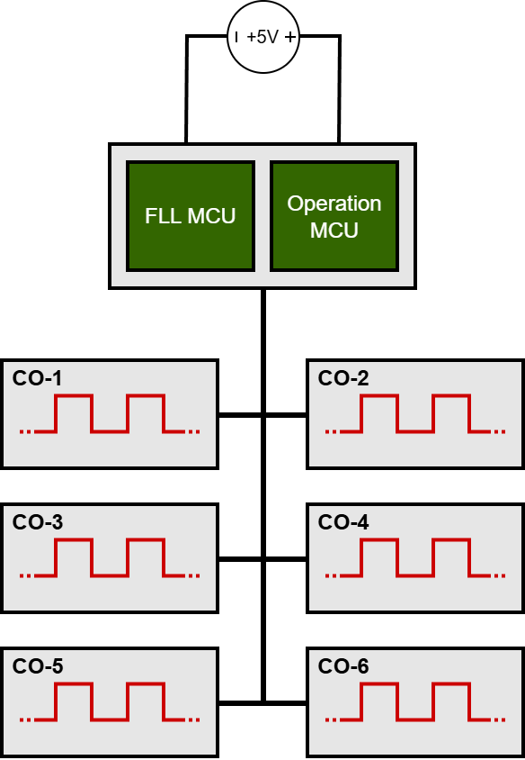
The prototype system, including the FLL & Operation MCUs, were powered by a single +5V DC power source (see Figure 5.1). The FLL & Operation MCUs were individually connected to a Windows system via USB connections for programming via UART-based serial connections (see Section 5.1.5), using the Arduino IDE software development platform. During each evaluation session, the evaluation data was saved on a micro-SD card connected to the Operation MCU. Upon the conclusion of each evaluation session, the micro-SD card was connected to a Windows system, where the data was transferred for analysis using a micro-SD card adapter.
Each custom CO module implemented in the constructed PHOSCO prototype was built from a set of circuit elements, including an oscillator element, a pair of Frequency-Control Resistor (FCR) elements (see Section 4.2.1), and a pair of intermediate circuits that acted as connectors between the oscillator element and its FCR elements. All CO modules were connected to the FLL & Operation MCUs via a further intermediate circuit. Thus, the overall prototype consisted of 5 unique circuit designs (see Figure 5.2).
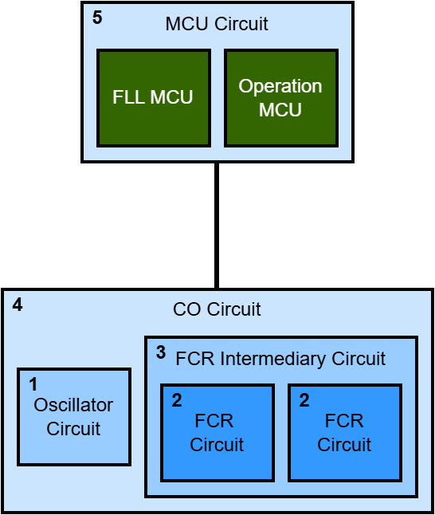
All circuits were initially developed & tested in the Falstad Circuit Simulator, on version 4.0.1 [79], in order to ensure that each of the designed CO modules performed the required tduty matching & pausing requirements as expected. The circuit designs were subsequently converted into individual schematics in the KiCad circuit designer software, on version 8.0.6 [80].
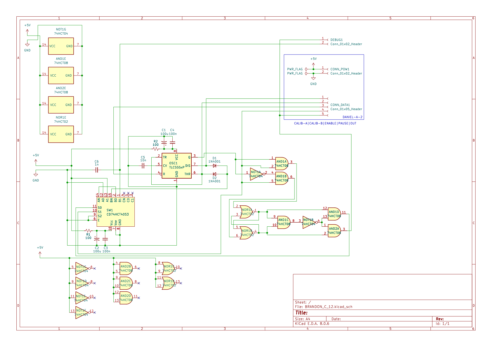
The oscillator circuit element (see Figure 5.3) was constructed around a TLC555 integrated circuit, marked as OSC1. It included a pair of analog switches, marked as SW1, that could effectively isolate the timing capacitor, marked as C6, from the oscillator component. Breakout connectors were made for each digital control line connected to the Operation MCU (see Table 4.2), alongside breakout connectors for the analog lines connected to the oscillator's FCR elements (see Table 4.3), marked as CONN_DATA1. The TLC555 component, alongside the analog switches, were partially decoupled from the shared power supply via the usage of a pair of decoupling capacitors, marked as C1 - C4, each placed after a decoupling resistor, marked as R1 & R2.
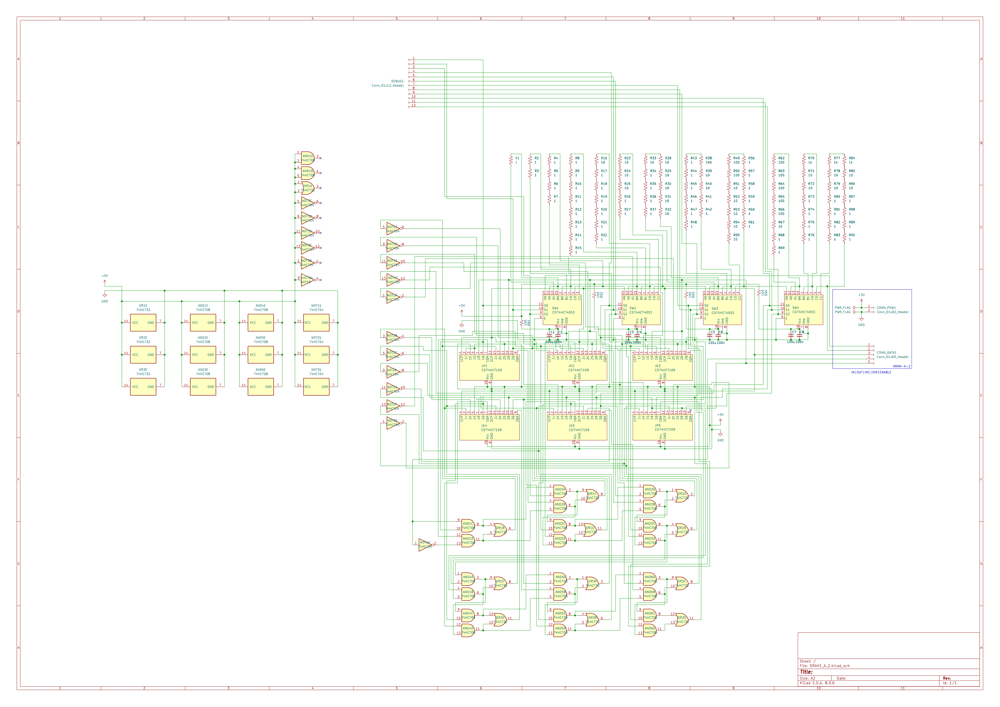
The FCR circuit element (see Figure 5.4) was constructed with a physical resistor network with a 1 Ω precision, connected together via a set of 12 analog switches, marked as SW1 - SW4, that were controlled by a 12-bit bi-directional digital counter. This 12-bit counter was constructed from 12 JK Flip-Flop components, marked as JK1 - JK6, which acted as a bi-directional digital counter with a reset toggle. Breakout connectors were made for each digital control line connected to the FLL MCU, alongside breakout connectors for the analog lines connected to the oscillator circuit element, marked as CONN_DATA1. The analog switches were partially decoupled with a pair of decoupling capacitors per each component, marked as C1 - C8, each placed after a decoupling resistor, marked as R91 - R94.
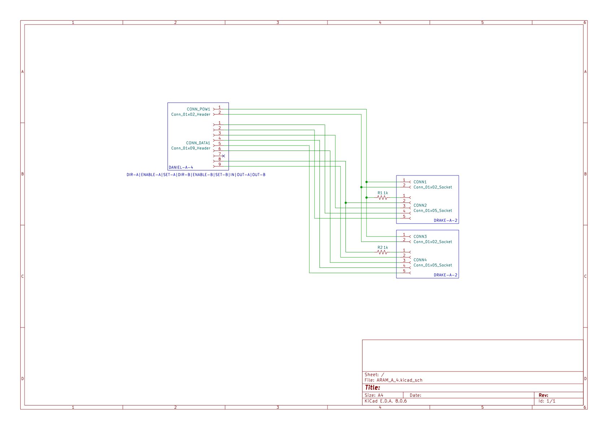
The two FCR circuit elements, that were assigned to each oscillator element circuit, were connected together via an intermediate circuit (see Figure 5.5). It contained breakout connectors for the digital & analog lines used by each FCR element, marked as CONN1 - CONN4.
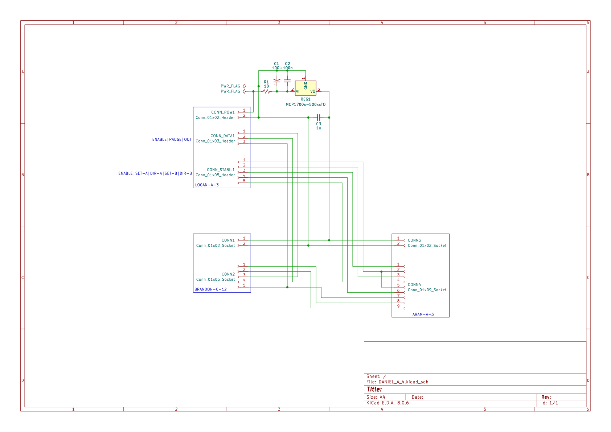
The oscillator circuit element and its respective pair of FCR circuit elements were connected together via a comprehensive intermediate circuit (see Figure 5.6). It contained breakout connectors for the digital control lines connected to the FLL & Operation MCUs, marked as CONN_STABIL1 & CONN_DATA1 respectively, alongside the MCP-1700 voltage regulator that acted as the local power source for the oscillator & the FCR circuit elements, marked as REG1. This circuit element acted as the complete CO module, and contained connectors for all the digital control lines required by the frequency-locking & control logic elements.
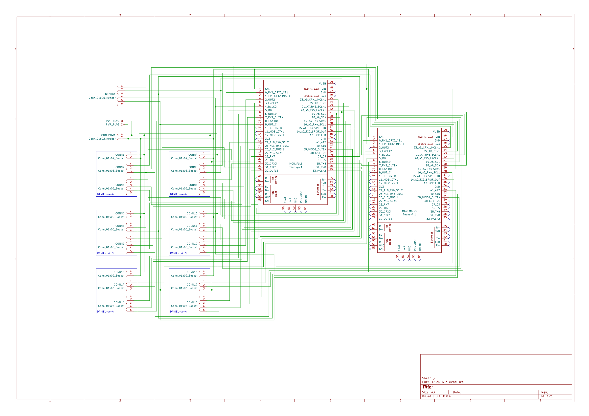
The individual CO modules were connected to the FLL & Operation MCUs via the MCU circuit (see Figure 5.7). It contained breakout connectors for the digital control lines for all 6 CO modules, marked as CONN1 - CONN18, alongside connectors for the two Teensy 4.1 MCU components, marked as MCU_FLL1 & MCU_MAIN1. The primary power connector for the entire prototype was located in this circuit, marked as CONN_POW1, which supplied power to the entire system.
All custom circuits that comprised the CO modules in the constructed PHOSCO prototype were fabricated & assembled as physical printed circuit boards (PCBs). Since the custom-designed CO modules included precise analog oscillator circuitry, in order to minimize any electrical noises attributable to faulty solder connections, it was decided to implement any logical IC chips and resistor components with surface-mount (SOIC) connections instead of through-hole (PDIP) connections. This meant that all fabricated PCBs would additionally require an automated component assembly service alongside their fabrication, given the miniature physical scale of most conventional SOIC connection footprints.
In order to minimize the expected costs incurred by the fabrication & assembly of 5 separate PCB designs, it was crucial to choose a PCB fabrication & assembly service supplier that maintained relatively low fabrication & assembly costs with an acceptable level of product quality. To this end, the JLCPCB company, based in Hong Kong, People's Republic of China (PRC), was chosen as the primary PCB fabrication & assembly service supplier. The JLCPCB company was chosen because they maintain very low fabrication prices, good fabrication & assembly service quality, an extensive assembly in-stock parts library, and quick turnaround times [81].
Each PCB fabrication order was submitted through the JLCPCB company's primary order website. With the basic fabrication requirements, prices for a prototype PCB batch were commonly cited under $20. For all PCB orders placed during the design of the constructed PHOSCO prototype, the most basic set of PCB fabrication features were chosen (see Table 5.1). Each PCB assembly order, commonly referred to as a "PCBA order", is placed alongside each PCB fabrication order. The individual component parts are selected from JLCPCB's in-stock parts library, or pre-ordered from a co-signed external source. The assembly service prices vary significantly depending on the specific component parts used in the assembly order. During the design process of the constructed PHOSCO prototype, the parts pertaining to all the electrical & logical components were chosen from JLCPCB's in-stock parts library (see Table 5.2). These parts included the SOIC IC chips for all oscillators, digital logic gates, analog switches & JK Flip-Flops components, the SOIC resistor components, and the PDIP ceramic & electrolytic capacitor components.
At the time of the construction of the PHOSCO prototype, the turnaround time for small-scale PCB fabrication & assembly orders submitted to the JLCPCB company was commonly cited at 2-3 days for PCB fabrication, and 4-5 days for PCB assembly. The assembled circuit boards were subsequently expected to be shipped with the DHL Worldwide Express shipping service [82] to the place of final prototype assembly, which maintained commonly cited delivery times of 3-5 days. The power source, lead-free soldering equipment and 20 AWG wiring were sourced from local suppliers.
Following the design of the circuit elements comprising the constructed PHOSCO prototype, each circuit schematic was converted to a physical PCB design layout, with the KiCad circuit designer software. In order to minimize the expected fabrication & assembly costs, the PCB layouts were designed with a minimal number of electrical layers, and without any specialized design requirements. The standardized width for all physical trace connections across all the PCB layout designs were established at 0.3 mm for all digital & analog data lines, and at 0.5 mm for all power lines. The standardized size for all vias across all PCB layouts was established at 0.3 mm for data lines, and 0.5 mm for power lines. The standardized size for all through-hole connectors across all PCB layouts was established at 1 mm. All breakout connectors across all PCB layouts were implemented as through-hole connectors, at 2.54 mm spacing, with separate connector elements for the power supply lines, marked as CONN_POW, and the data lines, marked as CONN_DATA. The oscillator circuit element, the two intermediate circuit elements and the MCU circuit element were converted into 2-layer PCB designs, while the FCR circuit element was converted into a 4-layer PCB design. Automatic trace connection routing was performed by the "Freerouting" open-source plugin for KiCad, on version 2.1.0 [83].
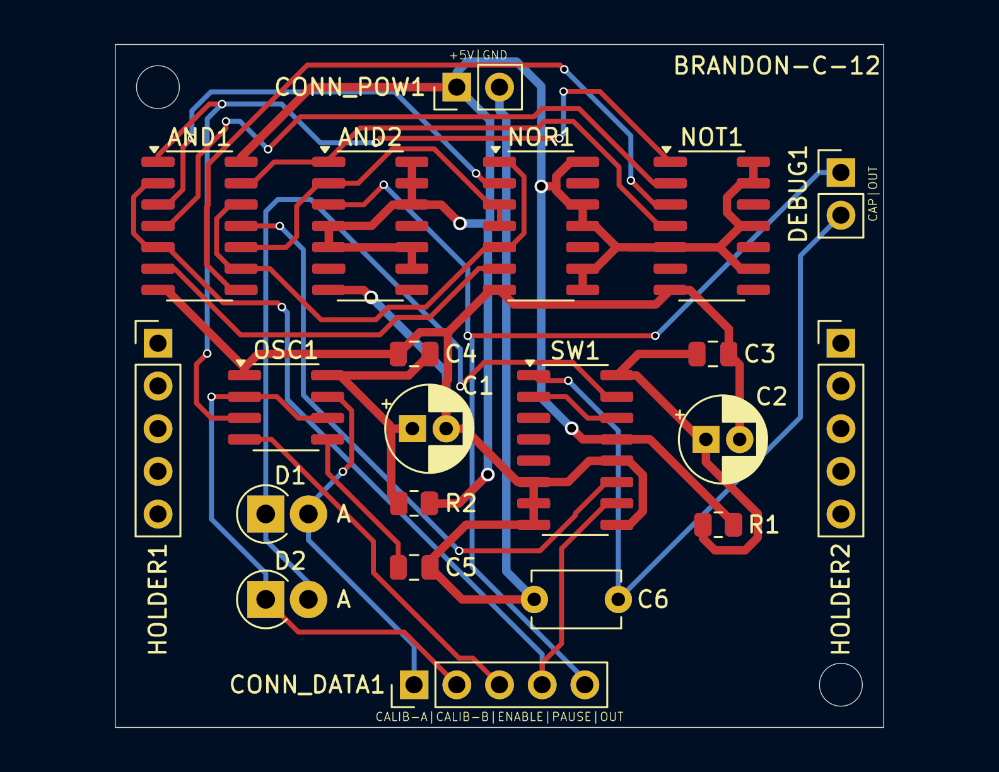
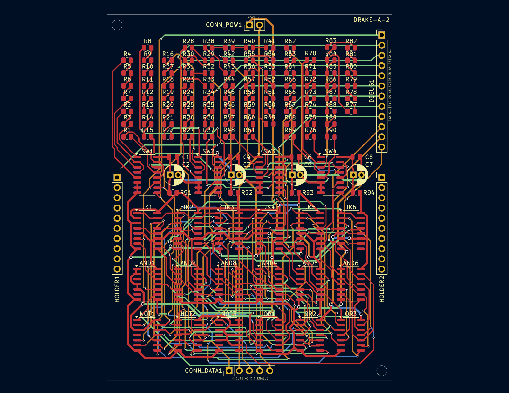
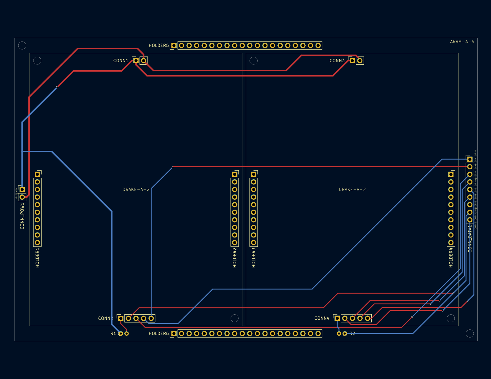
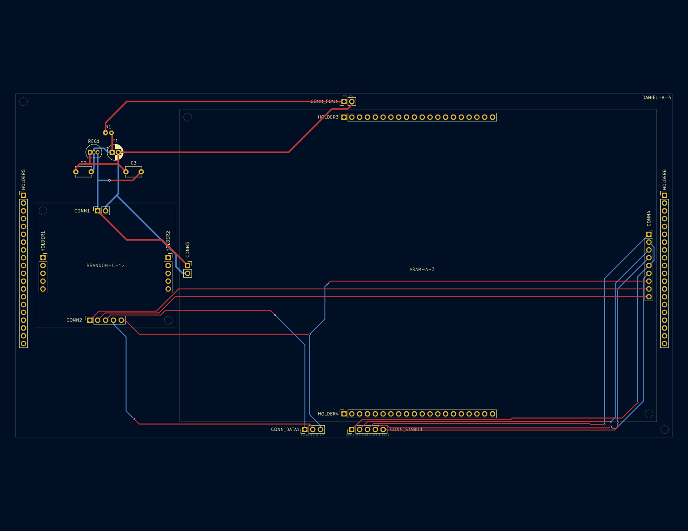
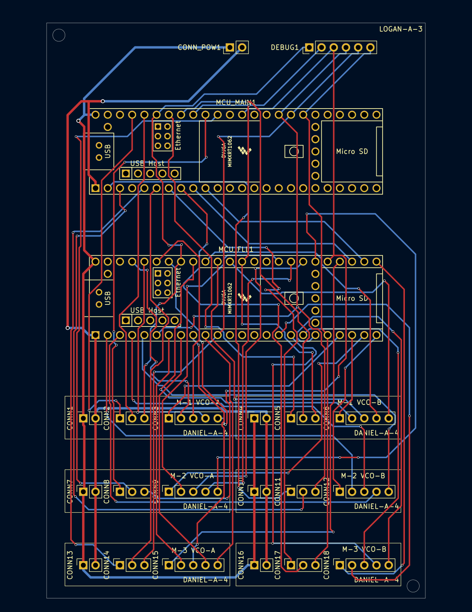
The individual PCB layout designs (see Figures 5.8–5.12) were subsequently exported into a set of GERBER layout design files [84] for fabrication. A set of bill of material (BOM) files was also generated, which assigned the physical circuit components to their respective positions on the PCBs for assembly (see Figure 5.13).
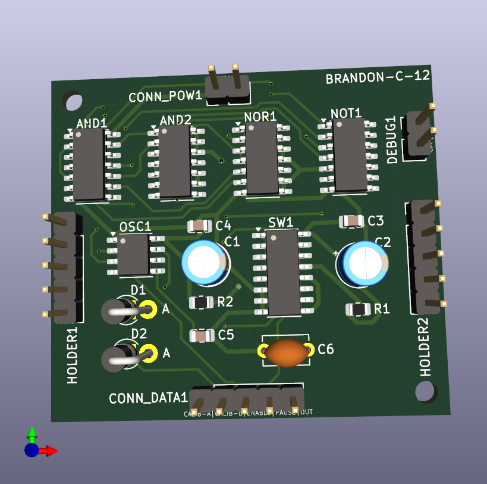
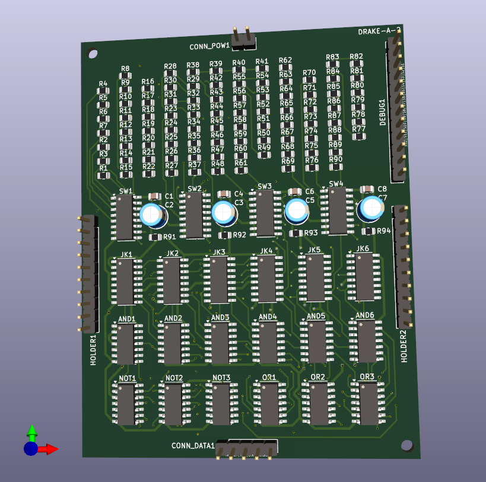
All PCB design layouts, alongside their respective BOM listings, were submitted to the JLCPCB company for fabrication & assembly. Each fabrication & assembly order process involved the uploading of the exported GERBER files to the JLCPCB primary order website. The basic fabrication methodologies were chosen for all fabricated PCBs (see Table 5.1), including FR-4 circuit board material, lead-free HASL covering, a thickness of 1.6 mm, an outer layer copper weight of 1 oz and an inner layer copper weight of 0.5 oz. These copper weight figures would ensure a maximum possible current capacity of 0.3 A for data lines, and 0.4 A for power lines.
| PCB Manufacturing Feature | Oscillator PCB | FCR PCB | FCR Intermediate PCB | Comprehensive Intermediate PCB | MCU PCB |
|---|---|---|---|---|---|
| Base material | FR-4 | ||||
| Surface finish material | Lead-free HASL | ||||
| Dimensions (mm) | 45.7 × 40.6 | 71.1 × 91.4 | 154.9 × 101.6 | 213.4 × 111.8 | 78.7 × 119.4 |
| Thickness (mm) | 1.6 | ||||
| Layers | 2 | 4 | 2 | ||
| Outer copper weight (oz) | 1 | ||||
| Inner copper weight (oz) | N/A | 0.5 | N/A | ||
| Trace width data (mm) | 0.3 | ||||
| Trace width power (mm) | 0.5 | ||||
| Via diameter data (mm) | 0.3 | ||||
| Via diameter power (mm) | 0.5 | ||||
| Through-hole diameter (mm) | 1 | ||||
| Amount | 20 | 20 | 10 | ||
Table 5.1: PCB fabrication specifications used during the construction of the PHOSCO prototype.
The assembly orders, placed alongside the PCB fabrication orders, included the uploading of the generated BOM listings to the JLCPCB primary order website. The "Economic PCBA" assembly option was chosen for all placed assembly orders, and the respective electrical components were manually chosen from the JLCPCB's In-Stock parts library (see Table 5.2).
| Circuit Component | Part Name | JLCPCB Part ID | Manufacturer | Footprint | Amount |
|---|---|---|---|---|---|
| Oscillator | TLC555 | C6987 | Texas Instruments | SOIC-8 | 10 |
| AND logic gate | SN74HCT08 | C6767 | Texas Instruments | SOIC-14 | 140 |
| OR logic gate | SN74HCT32 | C6781 | Texas Instruments | SOIC-14 | 60 |
| NOR logic gate | SN74HCT02 | C471050 | Texas Instruments | SOIC-14 | 10 |
| NOT logic gate | SN74HCT04 | C6766 | Texas Instruments | SOIC-14 | 70 |
| Analog switch (SPDT) | CD74HCT4053 | C6559 | Texas Instruments | SOIC-16 | 90 |
| JK Flip-Flop | CD74ACT109 | C2677772 | Texas Instruments | SOIC-16 | 120 |
| Voltage Regulator (+5V) | MCP-1700 | N/A | Microchip Technology | TO-92 | 10 |
Table 5.2: Component part selection from JLCPCB's in-stock parts library, corresponding to all logical circuit components of the constructed PHOSCO prototype.
After an initial assembly placement confirmation, the submitted PCB layout designs were fabricated & assembled (see Figures 5.14–5.18). The oscillator and the three intermediate circuit PCBs were ordered in batches of 10 each, while the FCR circuit PCB was ordered in a batch of 20.
The fabricated & assembled PCBs were subsequently delivered to the final place of prototype assembly, using the DHL Express Worldwide carrier service.
The PHOSCO prototype was constructed over the course of Spring & Fall of 2025. The construction process consisted of establishing physical connections between the PCBs corresponding to the oscillator, FCR & intermediary circuit elements, alongside the FLL & Operation MCUs.
The CO elements were assembled by manually soldering all the breakout connectors of the PCBs corresponding to the oscillator circuit element, their respective FCR circuit elements, and their two intermediary circuit elements. Each assembled CO module thus contained one oscillator circuit element PCB, two FCR circuit elements PCBs, and the two intermediary circuit element PCBs in a vertical stacking layout (see Figure 5.19).
Following the assembly of the 6 CO modules, the power and digital lines of each CO module were connected to the MCU circuit element PCB. These physical connections were established via soldering insulated 20 AWG copper wires. Unlike the PCBs comprising the CO modules, the connectors for the Teensy 4.1 MCU components consisted of standard plastic insertion sockets that reflected the breakout pin layouts of the Teensy 4.1 component (see Figure 5.20).
In order to safely power the constructed PHOSCO prototype, the FLL & Operation MCUs had to be powered solely by their respective VIn breakout pins, instead of drawing power through their USB connections. This required the physical disconnection of the primary power connection trace, located on the bottom of the Teensy 4.1's physical PCB (see Figure 5.21), to prevent power draw from their respective micro-USB connectors.
Upon the conclusion of the construction process, the constructed prototype was placed on a stable plastic surface for evaluation (see Figure 5.22). Finally, the general power connector, consisting of a +5V and a ground wire, as soldered to a pair of exposed wire pairings to allow powering of the entire prototype via alligator connectors. Power was provided by a single +5V linear DC power source, using the CSI305 BENCH power supply component [85].
The frequency-locking, TDV simulation & evaluation logical modules (see Section 4.3) were developed were developed in the Arduino IDE software development platform, on version 2.3.8 [86], as high-level C++ code, on a Windows 11 system. All C++ code executed on each MCU was contained within one INO file per MCU, with individual functions enclosing different functional elements of each logical module. The written code was compiled & uploaded to the Teensy 4.1 MCUs (see Section 4.3.1) using the installed Teensyduino plugin, on version 1.60 [87], alongside its in-built GCC compiler, on version 11.3.1 [88], with the C++ 17 standard [89]. The compiled code upload process for each MCU entailed the selection of the respective MCU's serial COM port selection within the Arduino IDE software, and the activation of the programming functionality. The compiled codebase would subsequently be programmed on the respective MCU via a UART-based protocol over a physical USB connection. Following each successful code uploading & programming process, the constructed prototype system was power-cycled by briefly de-activating the primary +5V DC power source, and promptly re-activating it, to execute the uploaded programs on the FLL & Operation MCUs.
In order to maximize the execution speed of the written C++ code for both the FLL & Operation MCUs, it was crucial to design the code in a manner that prioritized optimal execution speed, and implement the appropriate compilation optimization options within the GCC compiler. The Arduino IDE software interface offered a variety of optimization options (see Table 5.3).
| Arduino IDE Option | GCC Equivalent | Optimization Priority | Link-time Optimization |
|---|---|---|---|
Fast | o1std | balanced | No |
Fast with LTO | o1lto | balanced | Yes |
Faster | o2std | code speed | No |
Faster with LTO | o2lto | code speed | Yes |
Fastest | o3std | code speed (fastest) | No |
Fastest with LTO | o3lto | code speed (fastest) | Yes |
Debug | ogstd | no optimization | No |
Smallest Code | osstd | code size | No |
Smallest Code with LTO | oslto | code size | Yes |
Table 5.3: C++ code compilation optimization options available in the Arduino IDE software development platform.
During the early stages of code development & testing, all code was compiled with the Debug optimization option to ensure base functionality was maintained as all features were added into the codebase for each MCU, with the Fastest with LTO option intended for use with the finalized codebase. While this approach ultimately proved successful for both the FLL & Operation MCUs, difficulties were encountered during the code development process with the link-time optimization (LTO) feature included in the fastest optimization options. Since the LTO process includes re-ordering of the individually compiled code segments during the linking process, timing-critical code modules that used variables marked as volatile had to be manually excluded from any functional inlining processes by using the __attribute__((noinline)) function declaration specification (see Figure 5.24). This approach ensured that the specific execution order within the timing-critical code modules was maintained despite any optimization-oriented modifications made to the compiled code.
Furthermore, in order to maximize the execution speed of the logical elements that required precise timing measurements or precise timing execution, their functional elements were enclosed within functions marked with the FASTRUN calling convention. This ensured that the functional elements contained within these functions were placed in the tightly-coupled memory section that comprised 512 Kb of the Teensy 4.1 MCU's RAM, which minimized any overhead encountered during their execution. While a further potential speed optimization was possible to achieve by implementing an overclock in terms of the CPU speed pertaining to the Teensy 4.1 MCU systems (see Figure 5.25), due to stability & excess heat generation concerns relating to the Cortex-M7 processor, it was decided to use the default CPU clock speed of 600 MHz for both the FLL & Operation MCUs.
These modifications, combined with ensuring that all local variables used within all timing-critical functions were pre-declared & properly initialized prior to each timing-critical code segment, was expected to effectively maximize the overall execution speed of all instruction sequences written as high-level C++ code and executed on the FLL & Operation MCUs.
The constructed PHOSCO prototype was comprehensively evaluated with the testing algorithms developed as the evaluation logic on the Operation MCU (see Section 4.3.4). This process included separate evaluations of its frequency-locking capabilities (see Section 4.3.2), its TDV storage precision & longevity (see Section 4.3.4.2) and its TDV operation precision (see Section 4.3.4.3). For each evaluation session, the evaluation data was stored on a micro-SD card connected to the Operation MCU as a series of plain-text TXT files, which was subsequently connected to a Windows system and transferred for evaluation & visualization.
The attained data pertaining to the frequency-locking capabilities showed a maximum achieved HIGH & LOW tduty duration error of ±500 CPU cycles (see Section 5.2.1). The attained storage & operation evaluation data showed ∆Φ error figures that were smaller than the pre-established overall system tolerance of ±10% of tduty (see Section 4.3.4.4). The storage precision & longevity displayed a maximum error deviation of ±9% within the tracking period of 10 seconds (see Section 5.2.2). The operation result precision data displayed a maximum error deviation of ±5% for the Copy & Inversion operations, and ±7% for the Addition & Subtraction operations, immediately after execution (see Section 5.2.3). Thus, the results pertaining to the storage & operation precision of the constructed prototype were determined to be a successful validation of the proposed PHOSCO framework (see Section 6.1).
The overall DC power draw from all implemented CO modules was measured at 40 mA, based on the reported figure on the DC power supply module. Thus, each of the 6 implemented CO modules maintained an estimated current draw of 6.7 mA, which at +5V corresponded to an estimated power draw of 33.3 mW per CO module.
The frequency & tduty matching capabilities of the constructed PHOSCO prototype were evaluated by executing the testing algorithm developed as part of the frequency-locking evaluation logic module (see Section 4.3.4.1), immediately after the start of a frequency-locking processes with a target tduty of 2,000 μs. The testing algorithm (see Algorithm 4.8) tracked the tduty durations of all CO modules in the prototypes system for 2,000 iterations, which corresponded to a tracking duration in excess of 100 seconds, in the absence of any TDV storage or operation processes. The resultant data was subsequently visualized with a custom Python-based visualization script (see Listing M.1).
The visualized frequency & tduty locking evaluation data (see Figure 5.26) displayed a high degree of tduty matching precision, following an initial convergence period of approximately 25 seconds. The measured tduty durations of all CO modules was observed to remain within a tolerance of ±500 CPU cycles of the target 1,200,000 CPU cycles (see Figure 5.26). This corresponded to an estimated tduty duration error of ±0.83 μs of the target tduty duration of 2,000 μs.
The noise within the observed tolerance of ±500 CPU cycles (see Figure 5.26) resembled a random scattering of measured tduty durations and was dense in nature. This noise was the likely result of random timing jitter, caused by inconsistent timing measurements of the Teensy 4.1's internal timing mechanics at the sub- μs scale. Due to the persistent & active nature of the custom frequency-locking algorithm that was implemented (see Algorithm 4.1), and a lack of an in-built duration measurement tolerance, a non-negligible amount of tduty over-correction likely also contributed to the observed noise.
The storage precision & longevity of the TDVs simulated in the constructed PHOSCO prototype were evaluated by executing the testing algorithm developed as part of the TDV storage evaluation logic module (see Section 4.3.4.2) during an active frequency-locking process. This included the execution of the TDVSet algorithm (see Algorithm 4.2) repeatedly, over a pre-determined set of testing input values (see Figure B.1a), followed by a ∆Φ tracking session of all TDVs. Each ∆Φ tracking session was executed for 2,000 iterations, which corresponded to a tracking duration in excess of 10 seconds. The resultant ∆Φ data was subsequently visualized with a custom Python-based visualization script (see Listing M.2, lines 92–222) in several sets of graphical plots. These visualizations displayed the results corresponding to individual tracking sessions performed with each tested input (see Appendix C), alongside a set of plots that displayed the collective average & standard deviation of the measured error (see Figure 5.27). The measured error was defined as the percentage of the ∆Φ values relative to the operating tduty durations of the CO modules in the prototype.
The visualization pertaining to the collective average error and its deviation (see Figure 5.27) displayed a gradual error divergence with respect to time. The initial measured ∆Φ of all TDVs displayed a very low degree of error average & deviation within the first 0.1 seconds of measurement. While the observed average error of all TDVs remained within a range of ±5% for the entirety of the measured 10 second period, the error deviation reached an approximate magnitude of ±9% for one of the evaluated TDVs. The visualizations pertaining to the individual test input values (see Appendix C) display a more intense degree of observable noise, with some individual test runs slightly exceeding the established ±10% precision tolerance threshold.
The observed noise within the ±10% tolerance was characterized as transient in nature. The visualizations pertaining to the individual test input values displayed a set of similar noise patterns that appeared to be synchronized. In many individual visualizations, one or more of the measured TDVs' ∆Φ values would trend upwards for a brief period of time, followed by a downward trend for another brief time period. While the occurrence intervals of these drift trends and their respective drift directions appeared to be random, this was a strong indication that these periodic noise patterns were a symptom of the inter-oscillator coupling forces (see Section 4.4.1). It is hypothesized that these transient trends are a manifestation of a given oscillator's relative oscillation phase being effectively pulled towards that of another oscillator.
The precision & longevity of the results attained by the TDV operations simulated in the constructed PHOSCO prototype were evaluated by executing the set of testing algorithms that was developed as part of the TDV operation evaluation logic module (see Section 4.3.4.3). The testing algorithms executed the respective operation type's simulation algorithm (see Algorithms 4.4–4.7) over a predetermined set of test inputs (see figures B.1b–B.1d), for a range of tocd values, followed by a ∆Φ tracking session of the Result TDV.
In order to properly evaluate all TDV operations, the first task that was carried out was finding an ideal set of tocd values for each operation type that would yield a high degree of result accuracy. To this end, the testing algorithms for each operation type were executed with a wide and coarse range of tocd values, provided in μs, followed by a very brief result ∆Φ tracking session. The resultant data was subsequently visualized with a custom Python-based visualization script (see Listing M.2, lines 402–463), which generated a graphical plot displaying the collective average error & deviation in the Result TDV's ∆Φ, with respect to the tested tocd values, for each operation type.
These visualizations displayed a set of tocd value ranges that yielded results with a high degree of result accuracy for each operation type (see Figure 5.28). The set of tocd values with the highest degree of accuracy tended to manifest at repeated intervals of 2,000 μs, which corresponded to the operating tduty durations of the CO modules comprising the simulated TDVs. By visually observing the sections in the plots that displayed a very low degree of error average & deviation, these ideal tocd ranges were further explored with a second tocd parameter search. This second search was performed by executing the testing algorithm of each TDV operation type with a narrow and fine range of tocd values, corresponding to the highly-accurate areas of tocd observed in the first parameter search.
The visualizations pertaining to the second tocd parameter-space search provided further insight into the tocd values that yielded the highest degree of operation accuracy (see Figure 5.29). The tocd values that were observed to have the highest degree of operational accuracy tended to maintain relatively narrow ranges of approximately 100 μs. This allowed each TDV operation type to be assigned an ideal tocd value (see Table 5.4).
| TDV Operation Type | First tocd Exploration Range (μs) | Second tocd Exploration Range (μs) | Ideal tocd Value (μs) |
|---|---|---|---|
| Copy | 0 – 12,000 | 5,000 – 7,000 | 6,000 |
| Inversion | 0 – 12,000 | 2,000 – 5,000 | 4,000 |
| Addition | 0 – 12,000 | 9,000 – 11,000 | 9,910 |
| Subtraction | 0 – 12,000 | 7,000 – 9,000 | 8,050 |
Table 5.4: Ranges of the performed tocd parameter-space searches & the found ideal tocd values for each TDV operation type.
Following the tocd parameter-space search, the longevity of the results produced by each TDV operation type were evaluated by executing their respective testing algorithms with a single tocd value, but with a longer ∆Φ tracking session of 2,000 iterations, equating to a duration in excess of 10 seconds. The provided tocd values for each operation type corresponded to the ideal tocd values found in the parameter-space search, and the resultant data was subsequently visualized with a custom Python-based visualization script (see Listing M.2, lines 224–400). These visualizations included several sets of graphical plots that displayed the individual Operand & Result TDVs' ∆Φ corresponding to each tested input (see Appendices D–G), alongside a set of plots that displayed the collective average error & deviation for each operation type (see Figure 5.30).
The visualizations pertaining to the collective average error and its deviation (see Figure 5.30) displayed slightly different precision figures for each operation type. While the Operand & Result TDVs' ∆Φ error in all operation types were observed to remain within the ±10% tolerance threshold immediately following an execution operation, the Copy & Inversion operations reached an approximate error deviation magnitude of ±5% (see Figures 5.30 & 5.30), while the Addition & Subtraction operations reached an approximate error deviation of ±7% (see Figures 5.30 & 5.30). The high accuracy displayed by the implemented TDV operations, observed in these evaluation results, served as a highly influential insight into the mathematical viability of the proposed PHOSCO framework (see Section 6.1).
In order to evaluate the longevity of the Result TDV produced by each operation type, the collective average error & deviation were visualized over a longer tracking period of 10 seconds (see Figure 5.31). Similarly to the storage evaluation results (see Section 5.2.2), while the observed average Result TDV ∆Φ error remained within the ±10% threshold for all operation types, it displayed a gradual divergence with respect to time. The error deviation reached an approximate magnitude in a slight excess of the ±10% threshold within the Copy operation visualization (see Figure 5.31). The visualizations pertaining to the individual test input values (see Appendices H–K) also displayed a significant degree of observable noise, with a non-negligible proportion of the individual test runs also slightly exceeding the tolerance threshold. The observed noise within the ±10% tolerance was very similar to the trends displayed in the storage evaluation data visualizations (see Section 5.2.2). The periodic and synchronized nature of the observed noise was likewise attributed to the relative oscillation attraction forces generated by the inter-oscillatory coupling forces.
In order to explore any potential correlations between the accuracy of the operational results and the tested input values, the average Result TDV error was visualized with respect to each Operand TDV set for each operation type, over the initial 5 ∆Φ tracking session results (see Figures 5.32–5.35). These visualizations displayed a very high degree of operational accuracy for the Copy & Inversion operations, both of which contained one Operand TDV per each Result TDV entry. The Copy operation result error displayed a slight tendency to drift negatively (see Figure 5.32), which was attributed to inherent inaccuracies introduced by the digital MCU simulation of its fop (see Section 4.3.3.2). The Inversion operation results displayed an occasional divergence in two tested inputs (see Figure 5.33), both of which maintained a high error deviation. The Addition & Subtraction operations, both of which contained two Operand TDVs per each Result TDV entry, displayed a relatively high degree of operational accuracy with relatively low error deviation. The Addition operation displayed occasional divergences within three tested inputs (see Figure 5.34), all of which maintained a high error deviation. The Subtraction operation, similarly to the Inversion operation, displayed a slight tendency to drift negative with respect to the provided Operand B value (see Figure 5.35).
The occasional strong divergences observed within the Inversion & Subtraction operation results were attributed to various electrical noises, alongside the slight drift observed in many of the collective error visualizations that occur immediately following an operation execution, was attributed to an artifact of the frequency-locking algorithm that was used in the frequency-locking logic of the constructed PHOSCO prototype (see Section 4.3.2). Due to the periodic pausing actions issued on the oscillators comprising the Operand & Result TDVs during simulated execution of the TDV operations, the tduty exhibited by the affected CO modules might be artificially lengthened for a brief period of time. This effect might cause the frequency-locking algorithm to erroneously report an overly-lengthy HIGH or LOW tduty duration, and cause an unintended tduty duration decrease. This hypothesis was further supported by the observed direction of the initial noise displayed by the individual visualizations (see Appendices H–K), which tended to always trend in the negative error direction. These observations indicated a likely presence of this unintended frequency-locking over-correction, caused by the periodic pausing actions.
The gathered, processed and visualized storage & operation precision evaluation data, alongside their qualitative analysis, provided significant & valuable insight into the viability of the proposed Phase-based Oscillatory Computational (PHOSCO) framework.
The fact that all TDV operations displayed a high degree of result accuracy, immediately following execution, was deduced as a very promising sign in terms of their mathematical viability. This implied that the operational workflow of the proposed TDV operations maintains a degree of merit in terms of a computational model, and is likely to produce more accurate results in subsequent PHOSCO prototypes. Thus, these results display an exciting degree of promise in the context of the proposed PHOSCO framework.
The noise observed within all TDV storage & operation evaluation datasets was attributed to the electrical noises introduced by the inter-oscillatory coupling interactions (see Section 4.4.1). This was deduced from the nature of the observed noise interactions, with the notable presence of repeating, synchronized and directed drifting patterns, instead of random scattering disturbances. To this end, it can be concluded that the overall operational precision of PHOSCO-based computing systems is highly sensitive to inter-oscillatory coupling interactions, and likely require an increased degree of electrical isolation of it's various circuit components, compared to contemporary digital systems. From the observed results, it was deduced that the value drift of stored numerical values is directly proportional to the duration of storage. This implies that the optimal usage of a PHOSCO-based system involves rapid value storage, computation & value extraction, while minimizing the overall time period in which numerical values spend stored within the hypothetical system. To address these storage longevity concerns, and to improve the operational accuracy of potential subsequent PHOSCO implementations, several important considerations are recommended for future investigation (see Section 6.2). It is hoped that these suggestions could act as a springboard for hypothetical evolutions of the PHOSCO framework, or become an inspiration for future research efforts into the realm of unconventional computational models.
The generalized nature of the proposed PHOSCO framework (see Section 3.1), alongside the relatively limited construction capacity encountered during the implementation of the constructed prototype (see Chapter 5), leave significant room for future improvement. There are several potential avenues for further research and development of the PHOSCO framework & future prototypes that are likely to yield improved computational results. Electrical improvements that include potential implementations of dedicated control logic circuitry (see Section 6.2.1) and a higher degree of electrical isolation (see Section 6.2.2) are likely to drastically increase the operation precision of future PHOSCO prototypes. Thorough statistical analysis & characterization of the noise patterns experienced by various noise sources could result in the creation of predictive models for noise filtering, which could drastically decrease the observed error in filtered operating results (see Section 6.2.3). A detailed analysis of power consumption requirements pertaining to the proposed PHOSCO framework, based on contemporary analog oscillator components, is likewise expected to offer an insight into the overall power demand profile of PHOSCO-based systems and a comparison to their conventional digital & analog counterparts (see Section 6.2.4). Additionally, the potential addition of non-linear arithmetic operations, such as multiplication & division, into the PHOSCO model are likely to significantly expand its limited set of potential applications (see Section 6.2.5).
The usage of specialized control logic elements for the frequency-locking mechanics and TDV storage & operation management could result in the realization of a fully-fledged PHOSCO-based computing system.
Dedicated frequency-locking logic can be implemented by the usage of a singular reference oscillator, calibrated to operate around the desired target frequency & tduty. This reference oscillator element could then be used in real-time comparison operations implemented solely with digital circuitry, and compared directly to the oscillator modules in a hypothetical PHOSCO-based system via latching-based mechanisms. The differing outputs of the latching elements could subsequently be used to trigger and direct changes in the oscillators' tduty controller elements. This could remove the need for a digital MCU controller system for frequency-locking. Furthermore, the unintended over-corrections that were observed in the operational results of the constructed PHOSCO prototype (see Section 5.2.3), could likely be mitigated by the inclusion of supplemental corrective logic that subtracted or discarded any tduty measurements artificially affected by the oscillator pausing actions. Alternatively, dedicated high-precision Frequency-Locked Loop circuits could be used to build the CO modules of subsequent PHOSCO prototypes (see Section 4.5), provided they are combined with supplemental oscillatory pausing mechanics.
Dedicated TDV storage logic can be implemented in various ways depending on the input format of the inserted numerical values. Conventional digital-to-time & time-to-digital converter modules can be used to convert an inserted digital number to a proportional time duration and vice-versa [39]. Such workflows could subsequently be used to insert numerical values into a PHOSCO-based system and read values stored as TDVs by converting the measured ∆Φ value to a proportional digital number. Analog values stored as capacitor charges could be used to create delay-line elements, which could be used to initialize the REF & VAL oscillator elements of a hypothetical TDV module with a proportional time difference. Similarly, the time duration corresponding of a given TDV's ∆Φ could be used to charge a holding capacitor to a charge state proportional to the TDV's ∆Φ [40].
Dedicated TDV operation logic can be realized as independent modules containing their respective operation circuits, which could execute TDV operations when connected to a set of hypothetical TDVs. These operation modules can hold additional latching or delay-based elements to establish a constant tocd value for each operation type, which would likely ensure a high degree of operational accuracy in the produced results.
The majority of the observed deviation & drift in terms of the error magnitude present in the results obtained during the evaluation of the constructed PHOSCO prototype were attributed to electrical noises & disturbances pertaining to concurrently-running oscillators. The most significant source of electrical noise that was encountered was caused by the electrical coupling experienced by the individual oscillator elements in each of the implemented CO modules (see Section 4.4.1). In order to reduce the overall disturbance magnitude produced by the inter-oscillator coupling iterations, each CO module could be individually isolated with the usage of optocoupler elements on each digital data line that connects them to the control & frequency-locking logic [90][91][92] (see Figure 6.1).
This approach would likely result in a significant decrease of electrical noise transmission through the individual digital lines connected to each CO module, and would allow them to be powered by separate power sources, while retaining their respective connections to the control logic. While a minimal degree of experienced signal delay for each optocoupler is expected to be introduced, the overall precision gain in subsequent prototypes due to the decrease in coupling-based noise would likely exceed any negative effects caused by the introduction of digital isolating components.
The precision drift observed in the longevity of stored TDV values within the constructed PHOSCO prototype (see Section 5.2.2) is primarily caused due to the oscillation drift experienced by each CO module, and due to the inter-oscillator coupling interactions. These noise sources could be effectively characterized in terms of a predictive model, as a function of time [93][94]. Such a hypothetical predictive model could subsequently be used to predict noise patterns in terms of a given TDV's ∆Φ, as a function of time, and be used to construct filtering modules. These filtering modules could be constructed purely as logical modules, or as filtering circuit elements attached to each CO module, which would likely result in a decrease of the overall observed noise levels in any filtered datasets.
Furthermore, similar characterization methodologies could be used to effectively characterize the ideal tocd values for each TDV operation type in subsequent PHOSCO prototypes. Instead of performing extensive and costly parameter-space searches for all TDV operations in each hypothetical PHOSCO-based system, the ideal tocd values for each generalized TDV operation proposed in the theoretical PHOSCO framework could likely be modeled with training data from a few evaluated prototype systems. Since the tocd parameter-space search performed in the evaluation of the constructed PHOSCO prototype could be effectively interpreted as a machine learning problem, with the set of testing inputs provided to the tocd parameter-space search forming the training dataset, dedicated deep-learning algorithms could be used to characterize ideal tocd values for each generalized TDV operation type, which could be used in subsequent PHOSCO prototypes.
One of the primary motivations behind contemporary research of temporal computing models is tied to the considerable power efficiency advantages they maintain over their conventional digital and analog counterparts (see Section 2.2). Since the evaluation of the constructed prototype primarily focused on the validation of the theoretical PHOSCO frameworks, its observed power demand profile was not expected to demonstrate significant efficiency advantages that are characteristic of most contemporary temporal frameworks. A comprehensive analysis of the PHOSCO framework in terms of theoretical power requirements is an important consideration for hypothetical future prototypes. Such an analysis should include an evaluation of the expected power requirements with respect to the amount of oscillator modules used in a PHOSCO-based system, and is likely to provide significant insight on the relationship between the scale of a such systems and their respective power demand profile. Notably, this should be investigated in conjunction with an exploration of other contemporary analog oscillator modules [95][96][97], that operate on alternative oscillatory mechanics or with different analog oscillation mediums, to comprehensively investigate potential alternatives to the capacitor-based oscillators used in the constructed PHOSCO prototype.
The arithmetic TDV operations proposed in the theoretical PHOSCO framework rely on the alignment of the Operand TDV signals in order to create some linear combination corresponding to the resultant value. This approach has been demonstrated to work well for linear arithmetic operations in the constructed prototype, such as addition & subtraction. However, attempting to implement non-linear arithmetic operations with this approach, such as multiplication & division, is considerably more difficult. Some non-linear arithmetic operations, such as multiplication, can likely be implemented in a linear fashion for integer-only multiplication. However, multiplication by non-integer values, such as those stored in another TDV, would likely require additional non-digital circuit elements to perform exactly or approximate. Since a conclusive mathematical proof that disproves the possibility of the realization of multiplication & division solely with linear combinations has not yet been widely accepted, the existing alignment approach could likely be modified to perform a relatively accurate approximation algorithm for many non-linear operations.
Despite this, a slightly different approach to TDV computation, in the context of a hypothetical PHOSCO-based system, could be used for a potential implementation of some non-linear arithmetic operations, such as scalar multiplication & division. The introduction of frequency-alteration elements in the oscillator modules of a hypothetical PHOSCO-based system would theoretically allow for non-linear ∆Φ shifts between a given TDV's oscillator elements. This could be implemented similarly to the oscillator pausing functionality used in the proposed PHOSCO framework, where an oscillator's operating HIGH & LOW tduty durations could be instantaneously increased or decreased by a constant factor for an arbitrary duration of time.
Using this approach, a hypothetical TDV multiplication operation, for positive numerical values greater than 1, could be implemented as a frequency-alteration action that halves the operating frequency of one Operand TDV's VAL oscillator element, for the duration of the other Operand TDV's ∆Φ (see Figure 6.2). This would result in the altered TDV's ∆Φ being augmented by an amount corresponding to the static TDV's ∆Φ multiplied by a constant factor of 2. Similarly, a hypothetical TDV division operation, for positive numerical values greater than 1, could be implemented as a frequency-alteration action that doubles the operating frequency of one Operand TDV's VAL oscillator element, for the duration of the other Operand TDV's ∆Φ. This would result in the altered TDV's ∆Φ being decreased by an amount corresponding to the static TDV's ∆Φ divided by a constant factor of 2.
In this hypothetical approach, the frequency-alteration is used for all TDV multiplication & division operations in order to effectively scale a given TDV's ∆Φ value, dependent on the ∆Φ value of another TDV. The constant frequency-alteration factor, used by all non-linear TDV operations, would determine the effective multiplication & division range of such operations. In the context of a potential future PHOSCO prototype, this could be achieved by introducing supplemental control logic into each CO module, which could effectively redirect the charging & discharging processes of the timing capacitor through a secondary set of FCR modules, as determined by a digital control line. These secondary FCR modules would be pre-calibrated to correspond to the constant-factor offsets of the primary FCR modules, possibly controlled by the same frequency-locking logic. While this approach could theoretically provide results for arithmetic operations of multiplication & division for positive numerical values greater than 1, the viability of a mathematically pure form of such non-linear operations, which can account for all real values, remains to be investigated in the context of the theoretical PHOSCO framework.
[1] B.J. MacLennan, "Analog Computation", in Encyclopedia of Complexity and Systems Science, pp. 1--32, 2017. doi: 10.1007/978-3-642-27737-5_19-6
[2] O. Bournez, A. Pouly, "A Survey on Analog Models of Computation", 2018. [Online]. Available: 10.48550/arXiv.1805.05729
[3] P.M. Honnell, R.E. Horn, "Analog computer synthesis and error matrices", Electrical Engineering, vol. 76, no. 2, pp. 135-135, 1957. doi: 10.1109/EE.1957.6442976
[4] M.E. White, "An Analog Computer Technique for Solving a Class of Nonlinear Ordinary Differential Equations", IEEE Transactions on Electronic Computers, vol. EC-15, no. 2, pp. 157-163, 1966. doi: 10.1109/PGEC.1966.264298
[5] V. Kodali, "A Study of the Applications of Analog Computers", IEEE Transactions on Industrial Electronics and Control Instrumentation, vol. IECI-14, no. 1, pp. 1-7, 1967. doi: 10.1109/TIECI.1967.229550
[6] Y. Huang, N. Guo, M. Seok, Y. Tsividis, S. Sethumadhavan, "Analog Computing in a Modern Context: A Linear Algebra Accelerator Case Study", IEEE Micro, vol. 37, no. 3, pp. 30-38, 2017. doi: 10.1109/MM.2017.55
[7] R. Saucedo, T.W. Sze, "Analog simulation of digital computer programs", Transactions of the American Institute of Electrical Engineers, Part I: Communication and Electronics, vol. 80, no. 6, pp. 703-709, 1962. doi: 10.1109/TCE.1962.6373182
[8] J.C.G. Araújo, L.B. Oliveira, B.J. Guerreiro, F. Ferreira da Silva, "CMOS Analog Simulators of Dynamical Systems", IEEE Access, vol. 12, pp. 57424-57442, 2024. doi: 10.1109/ACCESS.2024.3391511
[9] Y. Tsividis, "Not your Father's analog computer", IEEE Spectrum, vol. 55, no. 2, pp. 38-43, 2018. doi: 10.1109/MSPEC.2018.8278135
[10] L. Cahn, "Accuracy of an Analog Computer", Transactions of the I.R.E. Professional Group on Electronic Computers, vol. EC-2, no. 4, pp. 12-18, 1953. doi: 10.1109/IREPGELC.1953.5407689
[11] V. Bush, "The differential analyzer. A new machine for solving differential equations", Journal of the Franklin Institute, vol. 212, no. 4, pp. 447-488, 1931. doi: 10.1016/S0016-0032(31)90616-9
[12] C.E. Shannon, "Mathematical Theory of the Differential Analyzer", Journal of Mathematics and Physics, vol. 20, no. 1-4, pp. 337-354, 1941. doi: 10.1002/sapm1941201337
[13] H.A. Rosen, M.W. Fossier, "A desk-model electronic analog computer", Transactions of the I.R.E. Professional Group on Electronic Computers, vol. EC-3, no. 4, pp. 20-24, 1954. doi: 10.1109/IREPGELC.1954.6499249
[14] L. Rubel, "The Extended Analog Computer", Advances in Applied Mathematics, vol. 14, no. 1, pp. 39-50, 1993. doi: 10.1006/aama.1993.1003
[15] B. Ulmann, "A THE ANALOG THING explained", in Analog Computing, pp. 483--494, 2026. doi: 10.1515/9783112210178-017
[16] E. H. Lee, S. Simon Wong, "Analysis and Design of a Passive Switched-Capacitor Matrix Multiplier for Approximate Computing", 2016. [Online]. Available: 10.48550/arXiv.1612.00933
[17] M. Noack, M. Krause, C. Mayr, J. Partzsch, R. Schüffny, "VLSI implementation of a conductance-based multi-synapse using switched-capacitor circuits", in 2014 IEEE International Symposium on Circuits and Systems (ISCAS), pp. 850-853, 2014. doi: 10.1109/ISCAS.2014.6865269
[18] J. Liang, N. Udayanga, A. Madanayake, S.I. Hariharan, S. Mandal, "A Switched-Capacitor-Based Analog Computer for Solving the 1-D Wave Equation", in 2020 IEEE International Symposium on Circuits and Systems (ISCAS), pp. 1-5, 2020. doi: 10.1109/ISCAS45731.2020.9180761
[19] M. Holters, J. Parker, "A Combined Model for a Bucket Brigade Device and its Input and Output Filters", in Conference: 21st International Conference on Digital Audio Effects (DAFx-18), 2018. [Online]. Available: www.dafx.de/paper-archive/details/KbFTgvcTMmHQ2bHZvOUekw
[20] C. Raffel, "Practical Modeling of Bucket-Brigade Device Circuits", in Conference: 13th International Conference on Digital Audio Effects (DAFx-10), 2010. [Online]. Available: www.dafx.de/paper-archive/details/JhVfAOFXD1lAtctkMTUODg
[21] Mueller, V. der Spiegel, Blackman, Chiu, Clare, Dao, Donham, Hsieh, Loinaz, "A general purpose analog neural computer", in International 1989 Joint Conference on Neural Networks, pp. 177-182 vol.2, 1989. doi: 10.1109/IJCNN.1989.118696
[22] S. Garg, J. Lou, A. Jain, M. Nahmias, "Dynamic Precision Analog Computing for Neural Networks", 2021. [Online]. Available: 10.48550/arXiv.2102.06365
[23] C. Demirkiran, L. Nair, D. Bunandar, A. Joshi, "A blueprint for precise and fault-tolerant analog neural networks", Nature Communications, vol. 15, no. 1, 2024. doi: 10.1038/s41467-024-49324-8
[24] J. Kendall, R. Pantone, K. Manickavasagam, Y. Bengio, B. Scellier, "Training End-to-End Analog Neural Networks with Equilibrium Propagation", 2020. [Online]. Available: 10.48550/arXiv.2006.01981
[25] S.A. Mahmoud, T.B. Nazzal, "Sample and hold circuits for low-frequency signals in analog-to-digital converter", in 2015 International Conference on Information and Communication Technology Research (ICTRC), pp. 36-39, 2015. doi: 10.1109/ICTRC.2015.7156415
[26] S. Callegari, R. Rovatti, G. Setti, "A Tailed Tent Map Chaotic Circuit Exploiting S$^2$I Memory Elements", 2015. [Online]. Available: 10.48550/arXiv.1506.08327
[27] J. Hasler, "Large-Scale Field-Programmable Analog Arrays", Proceedings of the IEEE, vol. 108, no. 8, pp. 1283-1302, 2020. doi: 10.1109/JPROC.2019.2950173
[28] V. Srinivasan, D. Graham, P. Hasler, "Floating-gates transistors for precision analog circuit design: an overview", in 48th Midwest Symposium on Circuits and Systems, 2005., pp. 71-74 Vol. 1, 2005. doi: 10.1109/MWSCAS.2005.1594042
[29] W. Aspray, "Edwin L. Harder and the Anacom: analog computing at Westinghouse", IEEE Annals of the History of Computing, vol. 15, no. 2, pp. 35-52, 1993. doi: 10.1109/85.207742
[30] T.S. Mak, K. Lam, H. Ng, G. Rachmuth, C. Poon, "A Current-Mode Analog Circuit for Reinforcement Learning Problems", in 2007 IEEE International Symposium on Circuits and Systems (ISCAS), pp. 1301-1304, 2007. doi: 10.1109/ISCAS.2007.378410
[31] V. Alimisis, A. Papathanasiou, E. Georgakilas, N. P. Eleftheriou, P. P. Sotiriadis, "An ultra-low power adjustable current-mode analog integrated general purpose artificial neural network classifier", AEU - International Journal of Electronics and Communications, vol. 186, pp. 155467, 2024. doi: 10.1016/j.aeue.2024.155467
[32] NIST, 2025. [Online]. Available: www.nist.gov/programs-projects/temporal-computing
[33] R. Gretsch, P. Song, A. Madhavan, J. Lau, T. Sherwood, "Delay-Space Arithmetic and Architecture", IEEE Micro, vol. 45, no. 4, pp. 87-94, 2025. doi: 10.1109/MM.2025.3588787
[34] M. Tasnim, S. Sachdeva, Y. Liu, S. X. -D. Tan, "Hybrid Temporal Computing for Lower Power Hardware Accelerators", 2024. [Online]. Available: 10.48550/arXiv.2407.08975
[35] ArchLab. [Online]. Available: www.arch.cs.ucsb.edu/neuromorphic
[36] G. Tzimpragos, J. Volk, D. Vasudevan, N. Tsiskaridze, G. Michelogiannakis, A. Madhavan, J. Shalf, T. Sherwood, "Temporal Computing With Superconductors", IEEE Micro, vol. 41, no. 3, pp. 71-79, 2021. doi: 10.1109/MM.2021.3066377
[37] A. Madhavan, M.W. Daniels, M.D. Stiles, "Temporal State Machines: Using Temporal Memory to Stitch Time-based Graph Computations", J. Emerg. Technol. Comput. Syst., vol. 17, no. 3, 2021. doi: 10.1145/3451214
[38] A. Madhavan, T. Sherwood, D. Strukov, "Race Logic: A hardware acceleration for dynamic programming algorithms", in 2014 ACM/IEEE 41st International Symposium on Computer Architecture (ISCA), pp. 517-528, 2014. doi: 10.1109/ISCA.2014.6853226
[39] S. Li, W. Bulerson, Time-difference circuits: Methodology, design, and digital realization, Ph.D. dissertation, University of Massachusetts Amherst, 2019. [Online]. Available: 10.7275/15080306
[40] M. Ali-Bakhshian, G. Roberts, "Digital storage, addition and subtraction of time-mode variables", Electronics Letters, vol. 47, pp. 910-911, 2011. doi: 10.1049/el.2011.1406
[41] Y. Fang, V.V. Yashin, D.M. Chiarulli, S.P. Levitan, "A Simplified Phase Model for Oscillator Based Computing", in 2015 IEEE Computer Society Annual Symposium on VLSI, pp. 231–236, 2015. doi: 10.1109/isvlsi.2015.44
[42] M. Santillán, "Synchronization dynamics of two mutually coupled 555-IC based electronic oscillators", Revista Mexicana de Física, vol. 64, no. 2 Mar-Apr, pp. 107–115, 2018. doi: 10.31349/RevMexFis.64.107
[43] M. Santillán, "Periodic forcing of a 555-IC based electronic oscillator in the strong coupling limit", 2015. [Online]. Available: 10.48550/arXiv.1407.6763
[44] H. Chang, X. Cao, U. Mishra, R. York, "Phase noise in coupled oscillators: Theory and experiment", Microwave Theory and Techniques, IEEE Transactions on, vol. 45, pp. 604 - 615, 1997. doi: 10.1109/22.575575
[45] J. Chou, S. Bramhavar, S. Ghosh, W. Herzog, "Analog Coupled Oscillator Based Weighted Ising Machine", 2019. [Online]. Available: 10.48550/arXiv.1906.06312
[46] M.J. Avedillo, M.J. Través, C. Delacour, A. Todri-Sanial, B. Linares-Barranco, J. Núñez, "Operating Coupled VO2-Based Oscillators for Solving Ising Models", IEEE Journal on Emerging and Selected Topics in Circuits and Systems, vol. 13, no. 4, pp. 901-913, 2023. doi: 10.1109/JETCAS.2023.3328887
[47] Y. Zhang, Y. Deng, Y. Lin, Y. Jiang, Y. Dong, X. Chen, G. Wang, D. Shang, Q. Wang, H. Yu, Z. Wang, "Oscillator-Network-Based Ising Machine", Micromachines, vol. 13, no. 1016, 2022. doi: 10.3390/mi13071016
[48] T. Geert de Jong, H. Notsu, K. Nakajima, "Harnessing omnipresent oscillator networks as computational resource", 2025. [Online]. Available: 10.48550/arXiv.2502.04818
[49] V. Heuthe, L. Seemann, S. Tovey, C. Bechinger, "Reservoir computing from collective dynamics of active colloidal oscillators", 2026. [Online]. Available: 10.48550/arXiv.2601.05767
[50] J. von Neumann, "Non-linear Capacitance or Inductance Switching, Amplifying, and Memory Organs", Patent, US2815488A, International Business Machines Corporation, 1957. [Online]. Available: patents.google.com/patent/US2815488A/en
[51] R.L. Wigington, "A New Concept in Computing", Proceedings of the IRE, vol. 47, no. 4, pp. 516-523, 1959. doi: 10.1109/JRPROC.1959.287311
[52] J. Roychowdhury, "Boolean Computation Using Self-Sustaining Nonlinear Oscillators", Proceedings of the IEEE, vol. 103, no. 11, pp. 1958-1969, 2015. doi: 10.1109/JPROC.2015.2483061
[53] T. Wang, J. Roychowdhury, "PHLOGON: PHase-based LOGic using Oscillatory Nano-systems", in Unconventional Computation and Natural Computation, pp. 353-366, 2014. doi: 10.1007/978-3-319-08123-6_29
[54] M. Bavandpour, M. Reza Mahmoodi, D. B. Strukov, "Energy-Efficient Time-Domain Vector-by-Matrix Multiplier for Neurocomputing and Beyond", 2017. [Online]. Available: 10.48550/arXiv.1711.10673
[55] G. Nallathambi, J. Principe, "Theory and Algorithms for Pulse Signal Processing", 2018. [Online]. Available: 10.48550/arXiv.1901.01140
[56] G. Nallathambi, J. Principe, "Signal Processing with Pulse Trains: An Algebraic Approach- Part I", 2016. [Online]. Available: 10.48550/arXiv.1611.03967
[57] G. Nallathambi, J. Principe, "Signal Processing with Pulse Trains: An Algebraic Approach- Part II", 2016. [Online]. Available: 10.48550/arXiv.1611.03970
[58] K.P. Pagkalos, O. Panetas-Felouris, V. Kalenteridis, S. Vlassis, "Analog Latch for Time-Mode PWM Signal Processing", in 2023 12th International Conference on Modern Circuits and Systems Technologies (MOCAST), pp. 1-4, 2023. doi: 10.1109/MOCAST57943.2023.10176888
[59] P. Semiconductors, "AN170: NE555 and NE556 Applications", Philips Semiconductors, AN170, 1988. [Online]. Available: www.555-timer-circuits.com/datasheets/555an.pdf
[60] T. Instruments, "TLC555 CMOS Timer (Rev. K)", 2026. [Online]. Available: www.ti.com/lit/ds/symlink/tlc555.pdf
[61] H. Camenzind, "Redesigning the old 555 [timer circuit]", IEEE Spectrum, vol. 34, no. 9, pp. 80-85, 1997. doi: 10.1109/6.619384
[62] F. Gagliardi, G. Manfredini, A. Ria, M. Piotto, P. Bruschi, "Low-Phase-Noise CMOS Relaxation Oscillators for On-Chip Timing of IoT Sensing Platforms", Electronics, vol. 11, no. 1794, 2022. doi: 10.3390/electronics11111794
[63] A. Lahiri, "New Canonic Active RC Sinusoidal Oscillator Circuits Using Second-Generation Current Conveyors with Application as a Wide-Frequency Digitally Controlled Sinusoid Generator", Active and Passive Electronic Components, vol. 2011, no. 1, pp. 274394, 2011. doi: 10.1155/2011/274394
[64] M. Idris Wani, S. Saquib Khan, B. Jan, M. Ahmad, M. Shojaei Baghini, L. Somappa, S. Malik, "Design Analysis and Experimental Validation of Relaxation Oscillator-Based Circuit for R-C Sensors", 2023. [Online]. Available: 10.48550/arXiv.2307.07822
[65] PJRC, "Teensy 4.1 Development Board", .pjrc.com/store/teensy41.html, 2020.
[66] P. Software Foundation, "Python", Version 3.12.7. [Online]. Available: www.python.org
[67] J.D. Hunter, "Matplotlib: A 2D graphics environment", Computing in Science & Engineering, vol. 9, no. 3, pp. 90--95, 2007. doi: 10.1109/MCSE.2007.55
[68] P. Feketa, A. Schaum, T. Meurer, "Synchronization Phenomena in Oscillator Networks: From Kuramoto and Chua to Chemical Oscillators", in Bio-Inspired Information Pathways: From Neuroscience to Neurotronics, pp. 385--406, 2024. doi: 10.1007/978-3-031-36705-2_16
[69] M. Technology Inc., "MCP1700 Low Quiescent Current LDO", 2021. [Online]. Available: www.microchip.com/en-us/product/MCP1700
[70] S. Golestan, J.M. Guerrero, F. Musavi, J.C. Vasquez, "Single-Phase Frequency-Locked Loops: A Comprehensive Review", IEEE Transactions on Power Electronics, vol. 34, no. 12, pp. 11791-11812, 2019. doi: 10.1109/TPEL.2019.2910247
[71] S. Abdali Nejad, J. Matas, H. Martín, J. de la Hoz, Y.A. Al-Turki, "New SOGI-FLL Grid Frequency Monitoring with a Finite State Machine Approach for Better Response in the Face of Voltage Sag and Swell Faults", Electronics, vol. 9, no. 612, 2020. doi: 10.3390/electronics9040612
[72] J. Dou, B. Xu, L. Dou, "Performance assessment of GNSS scalar and vector frequency tracking loops", Optik, vol. 202, pp. 163552, 2020. doi: 10.1016/j.ijleo.2019.163552
[73] M. Han, Q. Wang, Y. Wen, M. He, X. He, "The Application of Robust Least Squares Method in Frequency Lock Loop Fusion for Global Navigation Satellite System Receivers", Sensors, vol. 20, no. 1224, 2020. doi: 10.3390/s20041224
[74] S. Yu, T. Chou, S. Bose, J. Cook, J. Park, M.L. Johnston, "A Reconfigurable Tri-Mode Frequency-Locked Loop Readout Circuit for Biosensor Interfaces", IEEE Transactions on Biomedical Circuits and Systems, vol. 17, no. 4, pp. 768-781, 2023. doi: 10.1109/TBCAS.2023.3288505
[75] R.N. Dean, A.K. Rane, "A Digital Frequency-Locked Loop System for Capacitance Measurement", IEEE Transactions on Instrumentation and Measurement, vol. 62, no. 4, pp. 777-784, 2013. doi: 10.1109/TIM.2013.2240092
[76] R. Song, J. Zhang, J. Tong, M. Zhang, S. Cochran, I. Underwood, "Design and analysis of a frequency division and duty cycle control circuit for on-chip signal synthesis", Integration, vol. 90, pp. 115-125, 2023. doi: 10.1016/j.vlsi.2023.01.017
[77] S. Kao, "Design and Implementation of Fast Locking All-Digital Duty Cycle Corrector Circuit with Wide Range Input Frequency", Electronics, vol. 10, no. 71, 2021. doi: 10.3390/electronics10010071
[78] X. Wang, B. Busze, J. Romme, R.M. Vinella, C. Zhou, K. Philips, H. De Groot, "A multi-GHz 130ppm accuracy FLL for duty-cycled systems", in 2011 IEEE Radio Frequency Integrated Circuits Symposium, pp. 1-4, 2011. doi: 10.1109/RFIC.2011.5946283
[79] P. Falstad, "Falstad Circuit Simulator", Version 4.0.1, 2026. [Online]. Available: www.falstad.com/circuit
[80] K. Developers, "KiCad EDA Software Suite", Version 8.0.6. [Online]. Available: www.kicad.org
[81] L. Shenzhen JIALICHUANG Electronic Technology Development Co., "JLCPCB PCB Fabrication and Assembly Service", 2026. [Online]. Available: www.jlcpcb.com
[82] D. Global, "DHL Worldwide Express Shipping Service", 2026. [Online]. Available: www.dhl.com
[83] F. Community, "Freerouting KiCad Plugin", KiCad plugin version 2.1.0. [Online]. Available: www.github.com/freerouting/freerouting
[84] U. NV, "The Gerber File Format Specification", 2023. [Online]. Available: www.ucamco.com/en/gerber
[85] C. Specialists, "CSI305 BENCH Dual Adjustable DC Power Supply Instruction Manual", n.d.. [Online]. Available: www.circuitspecialists.com/content/230886/csi305_bench_manual.pdf
[86] A. AG, "Arduino IDE", Version 2.3.8. [Online]. Available: www.arduino.cc
[87] P. Stoffregen, PJRC, "Teensyduino: Teensy support for Arduino IDE", Version 1.60. [Online]. Available: www.pjrc.com/teensy/td_download.html
[88] F. Software Foundation, "GCC, The GNU Compiler Collection", Version 11.3.1. [Online]. Available: gcc.gnu.org
[89] ISO/IEC, "ISO/IEC 14882:2017: Programming languages -- C++", 2017. [Online]. Available: www.iso.org/standard/68564.html
[90] P. Lai, D. Gonzalez, S. Madhusoodhanan, A. Sabbar, S. Rmila, B. Dong, J. Wang, H. Mantooth, S. Yu, Z. Chen, "Development of LTCC-packaged optocouplers as optical galvanic isolation for high-temperature applications", Scientific Reports, vol. 12, 2022. doi: 10.1038/s41598-022-15631-7
[91] R. Sotner, J. Jerabek, L. Langhammer, J. Dvorak, "Design and Analysis of CCII-Based Oscillator with Amplitude Stabilization Employing Optocouplers for Linear Voltage Control of the Output Frequency", Electronics, vol. 7, no. 157, 2018. doi: 10.3390/electronics7090157
[92] V.J. Spataro, "Shielded Optocouplers Prevent Off-line Switching Power Supply Upset", Electronic Design, 2013. [Online]. Available: www.electronicdesign.com/technologies/power/article/21195812/shielded-…
[93] P. Ward, A. Duwel, "Oscillator phase noise: systematic construction of an analytical model encompassing nonlinearity", IEEE Transactions on Ultrasonics, Ferroelectrics, and Frequency Control, vol. 58, no. 1, pp. 195-205, 2011. doi: 10.1109/TUFFC.2011.1786
[94] E. Ebrahimi, S. Naseh, A. Ebrahimi, M. Maymandi-Nejad, "Analytical phase noise study of a back-gate coupled colpitts quadrature VCO", Microelectronics Journal, vol. 100, pp. 104784, 2020. doi: 10.1016/j.mejo.2020.104784
[95] Z. Huang, K. Xu, H. Dai, Z. Wu, X. Yu, G. Zhang, "Methods for Designing High-Precision Relaxation Oscillator", Micromachines, vol. 16, no. 364, 2025. doi: 10.3390/mi16040364
[96] L.M. Lopez-Jimenez, E. Tlelo-Cuautle, L.F. Cisneros-Sinencio, A. Diaz-Sanchez, "Experimental Evaluation of Memristor-Enhanced Analog Oscillators: Relaxation and Wien-Bridge Cases", Dynamics, vol. 5, no. 43, 2025. doi: 10.3390/dynamics5040043
[97] M.T. Abuelma'atti, Z.J. Khalifa, "A memristor based Wien-bridge sinusoidal/chaotic oscillator", in 2016 International Conference on Electronics, Information, and Communications (ICEIC), pp. 1-4, 2016. doi: 10.1109/ELINFOCOM.2016.7562959